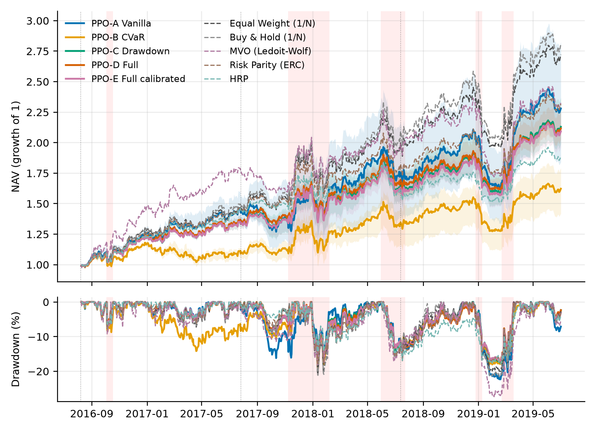
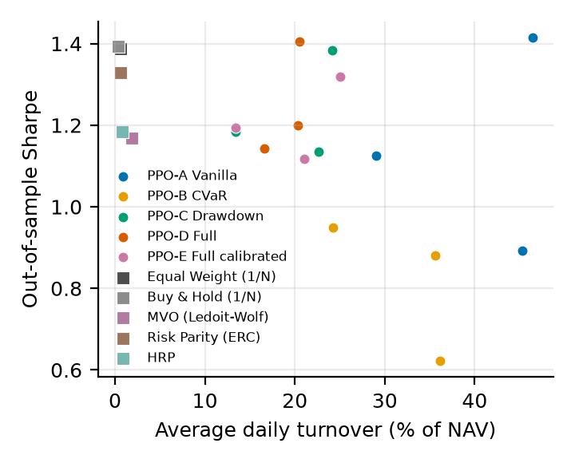
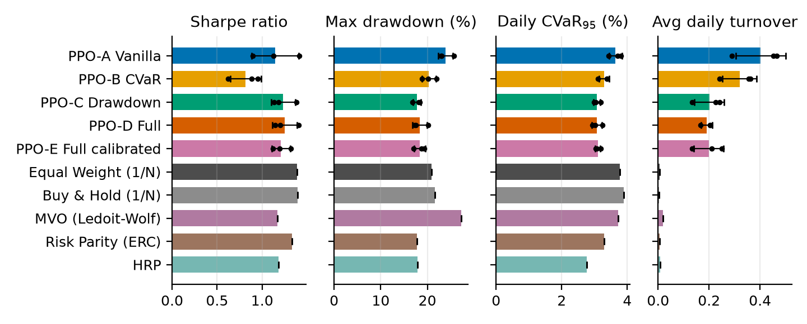
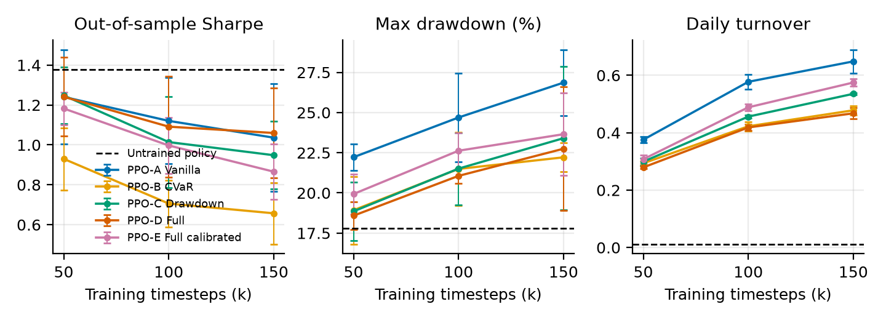
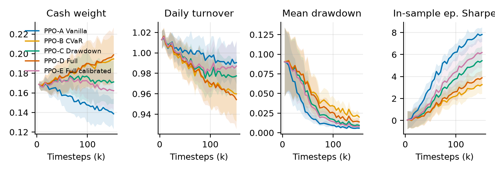
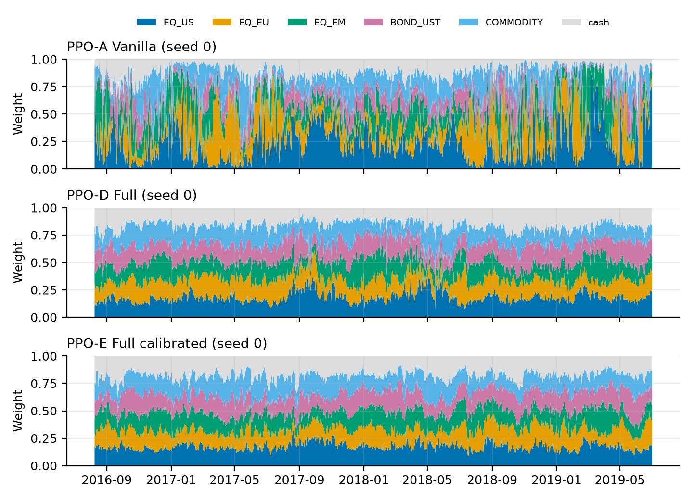
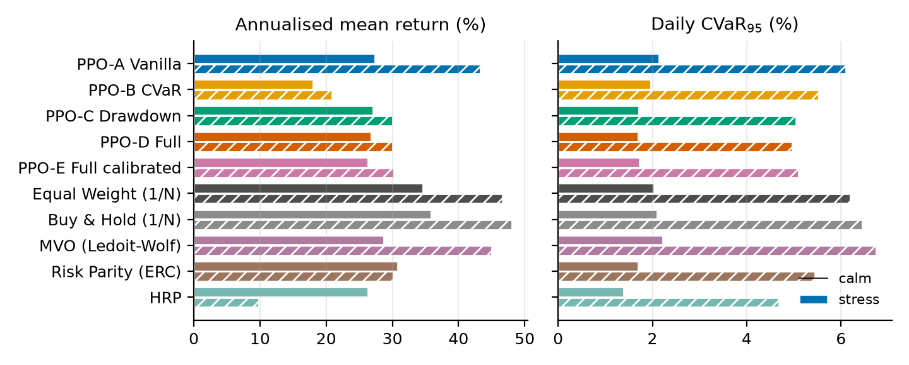

<title>Risk-Bounded DRL Allocation</title>
<meta name="description" content="Research paper: CVaR and drawdown penalised PPO for dynamic portfolio allocation under transaction costs and square-root market impact, with walk-forward ablation.">
<link rel="preconnect" href="https://fonts.googleapis.com">
<link rel="preconnect" href="https://fonts.gstatic.com" crossorigin>
<link rel="stylesheet" href="https://fonts.googleapis.com/css2?family=Source+Serif+4:ital,opsz,wght@0,8..60,400;0,8..60,600;0,8..60,700;1,8..60,400&family=IBM+Plex+Sans:wght@400;500;600&family=IBM+Plex+Mono:wght@400;500&display=swap">
<script>
window.MathJax = {
  tex: { inlineMath: [["\\(", "\\)"]], displayMath: [["\\[", "\\]"]], tags: "ams" },
  svg: { fontCache: "global" },
  options: { skipHtmlTags: ["script", "noscript", "style", "textarea", "pre", "code"] }
};
</script>
<script src="https://cdnjs.cloudflare.com/ajax/libs/mathjax/3.2.2/es5/tex-svg.js" async></script>
<style>
/* Layout: a single reading column (~68ch) for prose; figures and tables may widen to 960px. */
:root {
  --paper: #FAFBFC;
  --ink: #18212B;
  --muted: #5B6673;
  --rule: #D6DCE3;
  --accent: #1D5B86;
  --accent-soft: #EAF1F7;
  --panel: #FFFFFF;
  --good: #1E7A4C;
  --bad: #A23B2A;
  --serif: "Source Serif 4", "Source Serif Pro", Georgia, "Times New Roman", serif;
  --sans: "IBM Plex Sans", "Helvetica Neue", Arial, sans-serif;
  --mono: "IBM Plex Mono", Menlo, Consolas, monospace;
  --measure: 68ch;
  --wide: 960px;
}
@media (prefers-color-scheme: dark) {
  :root:not([data-theme="light"]) {
    --paper: #12171D; --ink: #E2E7ED; --muted: #9AA5B1; --rule: #2B343E; --accent: #86BCE3;
    --accent-soft: #1A2733; --panel: #F7F8FA; --good: #6CC79A; --bad: #E58C7C; color-scheme: dark;
  }
}
:root[data-theme="dark"] {
  --paper: #12171D; --ink: #E2E7ED; --muted: #9AA5B1; --rule: #2B343E; --accent: #86BCE3;
  --accent-soft: #1A2733; --panel: #F7F8FA; --good: #6CC79A; --bad: #E58C7C; color-scheme: dark;
}
body { background: var(--paper); color: var(--ink); font-family: var(--serif); font-size: 17px; line-height: 1.6; }
.page { max-width: var(--wide); margin: 0 auto; padding-inline: 20px; padding-block: 40px 80px; }
.page > * { max-width: var(--measure); margin-inline: auto; }
.page > figure, .page > .wide { max-width: var(--wide); }
h1, h2, h3, h4 { font-family: var(--sans); text-wrap: balance; line-height: 1.25; color: var(--ink); }
h1 { font-size: clamp(1.6rem, 3.4vw, 2.2rem); font-weight: 600; margin-block: 0 0.6em; letter-spacing: -0.01em; }
h2 { font-size: 1.32rem; font-weight: 600; margin-block: 2.4em 0.6em; padding-top: 0.6em; border-top: 1px solid var(--rule); }
h3 { font-size: 1.06rem; font-weight: 600; margin-block: 1.8em 0.4em; }
h2 .sec, h3 .sec { color: var(--accent); margin-right: 0.45em; font-variant-numeric: tabular-nums; }
p { margin-block: 0 1em; }
a { color: var(--accent); text-underline-offset: 2px; }
a:focus-visible { outline: 2px solid var(--accent); outline-offset: 2px; }
.kicker { font-family: var(--sans); font-size: 0.78rem; letter-spacing: 0.09em; text-transform: uppercase; color: var(--accent); margin-bottom: 0.8em; }
.byline { font-family: var(--sans); font-size: 0.9rem; color: var(--muted); margin-bottom: 2em; }
.abstract { border-left: 3px solid var(--accent); background: var(--accent-soft); padding: 1em 1.2em; margin-block: 1.4em 1.2em; }
.abstract h2 { border: 0; margin: 0 0 0.4em; padding: 0; font-size: 0.82rem; letter-spacing: 0.09em; text-transform: uppercase; color: var(--accent); }
.abstract p:last-child { margin-bottom: 0; }
.keywords { font-family: var(--sans); font-size: 0.86rem; color: var(--muted); }
.keywords b { color: var(--ink); font-weight: 500; }
nav.toc { font-family: var(--sans); font-size: 0.9rem; border: 1px solid var(--rule); padding: 0.9em 1.2em; margin-block: 1.6em; }
nav.toc h2 { border: 0; margin: 0 0 0.4em; padding: 0; font-size: 0.8rem; text-transform: uppercase; letter-spacing: 0.09em; color: var(--muted); }
nav.toc ol { margin: 0; padding-left: 1.3em; columns: 2 14rem; column-gap: 2rem; }
nav.toc li { break-inside: avoid; margin-block: 0.15em; }
.contrib { padding-left: 1.2em; }
.contrib li { margin-block: 0.35em; }
.callout { font-family: var(--sans); font-size: 0.93rem; border: 1px solid var(--rule); border-left: 3px solid var(--accent); padding: 0.8em 1em; margin-block: 1.2em; }
.callout b { color: var(--accent); }
.eq { overflow-x: auto; overflow-y: hidden; margin-block: 0.4em 1em; }
figure { margin-block: 1.8em; margin-inline: auto; }
figure.fig img { display: block; width: 100%; height: auto; background: var(--panel); border: 1px solid var(--rule); border-radius: 2px; }
figcaption { font-family: var(--sans); font-size: 0.86rem; color: var(--muted); line-height: 1.5; margin-top: 0.6em; }
figure.table figcaption { margin: 0 0 0.6em; }
figcaption b { color: var(--ink); font-weight: 600; }
.scroll { overflow-x: auto; }
table { border-collapse: collapse; width: 100%; font-family: var(--sans); font-size: 0.82rem; font-variant-numeric: tabular-nums; }
thead th { text-align: left; font-weight: 600; border-bottom: 1.5px solid var(--ink); padding: 0.45em 0.6em; vertical-align: bottom; line-height: 1.3; }
tbody td { padding: 0.38em 0.6em; border-bottom: 1px solid var(--rule); vertical-align: top; }
tbody tr:last-child td { border-bottom: 1.5px solid var(--ink); }
tr.group-start td { border-top: 1.5px solid var(--muted); }
th.num, td.num { text-align: right; white-space: nowrap; }
td .lam { color: var(--muted); font-size: 0.9em; white-space: nowrap; }
td .pm { color: var(--muted); font-size: 0.88em; }
.table-note { font-family: var(--sans); font-size: 0.8rem; color: var(--muted); margin-top: 0.5em; }
code, .mono { font-family: var(--mono); font-size: 0.86em; }
pre { font-family: var(--mono); font-size: 0.82rem; background: var(--accent-soft); padding: 0.9em 1em; overflow-x: auto; line-height: 1.5; }
ol.refs { font-size: 0.9rem; padding-left: 2.2em; }
ol.refs li { margin-block: 0.35em; }
.finding { display: grid; grid-template-columns: 2.2em 1fr; gap: 0.2em 0.6em; margin-block: 0.8em; }
.finding .n { font-family: var(--sans); font-weight: 600; color: var(--accent); }
.finding p { margin: 0; min-width: 0; }
mjx-container[display="true"] { margin: 0.6em 0 !important; }
@media (max-width: 560px) { body { font-size: 16px; } .page { padding-inline: 16px; } }
@media (prefers-reduced-motion: reduce) { * { scroll-behavior: auto !important; } }
</style>

<main class="page">
<div class="kicker">Technical report · Quantitative finance · Reinforcement learning</div>
<h1>Risk-Bounded Deep Reinforcement Learning for Dynamic Portfolio Allocation under Tail-Risk and Market Impact</h1>
<div class="byline">Draft for review · October 2026 · Code, configuration and every reported number are produced by the accompanying repository (§10)</div>

<section class="abstract">
<h2>Abstract</h2>
<p>Deep reinforcement learning (DRL) allocators trained to maximise expected return have no explicit incentive to avoid tail losses. A common remedy is to subtract tail-risk penalties from the reward. We test that remedy under conditions designed to be hard to fool: a friction-aware simulator (commission, half-spread, temporary and permanent square-root market impact), rolling walk-forward validation, three training seeds per configuration, and five classical baselines executed through the same simulator. In a controlled regime-switching market with fat-tailed returns, we train 45 PPO agents across a 2×2 ablation of a rolling-CVaR penalty and a squared-drawdown penalty, plus a variant with multipliers scaled to daily return magnitudes.</p>
<p>Penalties that include the drawdown term reduce maximum drawdown from 23.9% to 17.7–18.4%, cut stress-period daily CVaR<sub>95</sub> by about 18%, halve turnover, cut transaction costs by about 60%, and shrink the spread of outcomes across seeds two- to threefold, all relative to unpenalised PPO. The CVaR penalty on its own lowers the Sharpe ratio (0.82 vs 1.14) without a matching risk benefit. However, no PPO variant beats equal weighting after costs (best Sharpe 1.25 vs 1.39). Before costs, the agents are statistically indistinguishable from 1/N, and an untrained policy that holds 1/6 in each asset and in cash beats every trained agent on Sharpe and cost, and is within 0.1 percentage points of the best of them on drawdown and CVaR. A selection-free checkpoint analysis shows that additional training degrades out-of-sample performance for every variant, and that the agents do not learn state-dependent de-risking. In this setting, tail-risk reward penalties act as regularisers that keep the policy close to a conservative prior; they do not supply a risk-management capability. We discuss what this implies for risk-constrained DRL in finance and what a convincing test on market data would require.</p>

</section>
<p class="keywords"><b>Keywords:</b> deep reinforcement learning; proximal policy optimization; conditional value-at-risk; drawdown control; market impact; transaction costs; walk-forward validation; portfolio allocation</p>

<nav class="toc" aria-label="Contents">
<h2>Contents</h2>
<ol>
<li><a href="#s1">Introduction</a></li>
<li><a href="#s2">Related work</a></li>
<li><a href="#s3">Problem formulation</a></li>
<li><a href="#s4">Empirical setup</a></li>
<li><a href="#s5">Results</a></li>
<li><a href="#s6">Ablation study</a></li>
<li><a href="#s7">Discussion</a></li>
<li><a href="#s8">Limitations and threats to validity</a></li>
<li><a href="#s9">Conclusion</a></li>
<li><a href="#s10">Reproducibility</a></li>
<li><a href="#refs">References</a></li>
<li><a href="#appendix">Appendix</a></li>
</ol>
</nav>

<h2 id="s1"><span class="sec">1</span>Introduction</h2>
<p>Classical portfolio construction solves a static problem. Mean-variance optimisation <a href="#r1">[1]</a> and its descendants choose weights from estimated moments, and then hold or periodically rebalance them. Their weakness is well documented: estimation error in expected returns is large enough that the naive 1/N rule is hard to beat out of sample <a href="#r4">[4]</a>, which is why practitioners lean on shrinkage <a href="#r5">[5]</a> and on risk-based allocations such as equal risk contribution <a href="#r6">[6]</a> and hierarchical risk parity <a href="#r8">[8]</a> that avoid expected returns altogether.</p>
<p>Deep reinforcement learning (DRL) offers something different: a state-dependent, non-linear allocation policy trained end to end on the quantity an investor actually cares about, net of costs. Since the direct-reinforcement work of Moody and co-authors <a href="#r12">[12]</a><a href="#r13">[13]</a>, a series of studies has trained actor-critic agents to allocate across assets <a href="#r14">[14]</a><a href="#r15">[15]</a><a href="#r16">[16]</a><a href="#r17">[17]</a>. Most of these agents maximise the expected (log) return or a Sharpe-type objective. Nothing in such an objective distinguishes a smooth return stream from one that earns a premium by selling tail risk. The concern motivating this paper is that, in the absence of an explicit tail-risk term, a policy-gradient agent may settle on concentrated, high-exposure allocations that look good on average and then suffer large losses when the market changes regime.</p>
<p>Two common responses have clear limitations. Post-hoc overlays (stop-losses, volatility targeting) act outside the learning loop, so the policy never learns to avoid the states in which the overlay fires. Variance penalties, the natural extension of mean-variance thinking, are symmetric: they penalise upside dispersion as much as losses and ignore the path dependence of drawdowns. Constrained and risk-sensitive RL offer principled alternatives (constrained MDPs <a href="#r24">[24]</a>, CVaR-constrained policy gradients <a href="#r20">[20]</a><a href="#r21">[21]</a>, CPO <a href="#r22">[22]</a>, RCPO <a href="#r23">[23]</a>), but they are rarely evaluated in portfolio settings that also charge realistic frictions, retrain under walk-forward validation, and repeat training over several seeds.</p>
<p>This paper studies the simplest member of that family: <em>reward shaping with fixed penalty multipliers</em>. The agent's per-step reward is its log return minus a rolling historical CVaR of its own returns and a squared-drawdown term,</p>
<div class="eq">\[ R_t = \log(1+r_t) - \lambda_1\,\widehat{\mathrm{CVaR}}_{\alpha,t} - \lambda_2\,D_t^2 , \]</div>
<p>which can be read as the Lagrangian of a constrained MDP with the multipliers held fixed. We embed it in a simulator that charges commission, half-spread, and temporary and permanent square-root market impact <a href="#r25">[25]</a><a href="#r26">[26]</a><a href="#r27">[27]</a>, and we ask a narrow empirical question:</p>
<div class="callout"><b>Research question.</b> Once realistic frictions are charged and evaluation is strictly out of sample, do CVaR and drawdown penalties change what a PPO allocation agent learns, and do they reduce its tail risk relative to (i) an unpenalised PPO agent and (ii) classical allocation rules?</div>
<p>Our contributions are:</p>
<ol class="contrib">
<li><b>A tested, open framework</b> for friction-aware DRL allocation. It includes a Gymnasium environment whose cost accounting is verified by unit tests (an exact NAV identity each step, an exact closed-form commission, |q|<sup>3/2</sup> impact scaling, no look-ahead in observations).</li>
<li><b>A conservative impact model</b> with a decaying permanent-impact state, marking at un-impacted prices so that impact never produces paper gains, and post-cost trade sizing so that target weights are met without implicit leverage.</li>
<li><b>A controlled ablation</b>: five reward variants (the four-cell λ grid A–D plus a calibrated variant E), each trained from scratch on three seeds and three rolling walk-forward folds (45 agents), compared against five baselines executed through the same simulator. Inference uses paired block-bootstrap tests of Sharpe differences, and attribution uses the simulator's ground-truth regime labels.</li>
<li><b>Findings</b> that qualify the hypothesis above; they are summarised in §5–§7.</li>
</ol>
<p>We make no theoretical stability claim. Fixed-multiplier penalties carry no general guarantee of bounded tail risk, and we treat their effect as an empirical question.</p>

<h2 id="s2"><span class="sec">2</span>Related work</h2>
<h3><span class="sec">2.1</span>Classical portfolio construction</h3>
<p>Markowitz <a href="#r1">[1]</a> formalised the mean-variance trade-off; Black and Litterman <a href="#r2">[2]</a> stabilised it by blending equilibrium returns with views; the Kelly criterion <a href="#r3">[3]</a> maximises expected log growth, the same quantity that forms the return term of our reward. DeMiguel, Garlappi and Uppal <a href="#r4">[4]</a> showed that the gains from optimisation are typically consumed by estimation error, making 1/N a demanding benchmark. Ledoit–Wolf shrinkage <a href="#r5">[5]</a> regularises the covariance matrix; risk-based allocations, namely equal risk contribution (ERC) <a href="#r6">[6]</a><a href="#r7">[7]</a> and hierarchical risk parity (HRP) <a href="#r8">[8]</a>, sidestep expected-return estimation. Coherent risk measures <a href="#r11">[11]</a> and the linear-programming representation of CVaR <a href="#r9">[9]</a><a href="#r10">[10]</a> made tail-risk optimisation tractable, and drawdown-constrained allocation has a long history of its own <a href="#r36">[36]</a><a href="#r37">[37]</a>.</p>
<h3><span class="sec">2.2</span>Reinforcement learning for trading and allocation</h3>
<p>Moody et al. <a href="#r12">[12]</a> and Moody and Saffell <a href="#r13">[13]</a> trained trading systems by direct reinforcement on the differential Sharpe ratio. Deep architectures followed: recurrent direct-reinforcement agents <a href="#r15">[15]</a>, the ensemble-of-identical-independent-evaluators portfolio network of Jiang et al. <a href="#r14">[14]</a>, and actor-critic agents across futures markets <a href="#r16">[16]</a>. Libraries such as FinRL <a href="#r17">[17]</a> standardised environments built on PPO <a href="#r18">[18]</a>. Typical evaluations use proportional costs only, a single chronological split and a single training seed, despite evidence that deep-RL results vary strongly across seeds <a href="#r31">[31]</a><a href="#r32">[32]</a>.</p>
<h3><span class="sec">2.3</span>Risk-sensitive and constrained reinforcement learning</h3>
<p>Constrained MDPs <a href="#r24">[24]</a> add expected-cost constraints to the return objective. Chow et al. <a href="#r21">[21]</a> derived policy-gradient and actor-critic algorithms for CVaR-constrained MDPs; Tamar et al. <a href="#r20">[20]</a> estimated CVaR gradients by sampling; CPO <a href="#r22">[22]</a> enforces constraints with trust-region updates and RCPO <a href="#r23">[23]</a> adapts Lagrange multipliers on a slower timescale. Deep hedging <a href="#r41">[41]</a> trains networks to minimise convex risk measures (including CVaR) of hedged P&amp;L under frictions. Our formulation sits at the simple end of this spectrum: the multipliers are fixed hyper-parameters and the CVaR is a rolling empirical estimate on realised returns rather than a distributional quantity of the return-to-go. That simplicity is what most applied DRL portfolio studies use, which is why we test it.</p>
<h3><span class="sec">2.4</span>Transaction costs and market impact</h3>
<p>Almgren and Chriss <a href="#r25">[25]</a> separated temporary from permanent impact in optimal execution. Empirical work supports a concave, approximately square-root dependence of impact on trade size relative to volume <a href="#r26">[26]</a><a href="#r27">[27]</a>. We adopt square-root forms for both components, scaled by daily volatility.</p>
<h3><span class="sec">2.5</span>Evaluation methodology</h3>
<p>Backtest overfitting inflates Sharpe ratios when many configurations are tried <a href="#r33">[33]</a>. Robust Sharpe-difference testing requires accounting for serial dependence and correlation between strategies <a href="#r30">[30]</a>, which we do with a paired circular block bootstrap <a href="#r29">[29]</a>. In RL, Henderson et al. <a href="#r31">[31]</a> and Agarwal et al. <a href="#r32">[32]</a> argue for multiple seeds and interval estimates rather than single-run point estimates.</p>

<h2 id="s3"><span class="sec">3</span>Problem formulation</h2>
<h3><span class="sec">3.1</span>Markov decision process</h3>
<p>Time is indexed by trading days \(t\). The investor holds \(N\) risky assets and cash, with net asset value \(\mathrm{NAV}_t\), share holdings \(h_t\in\mathbb R^N\) and close prices \(P_t\). Decisions are taken at the close of \(t\) using information available at the close of \(t\).</p>
<p><b>State.</b> The observation is</p>
<div class="eq">\[ s_t = \big(\,X_{t-L+1:t},\; w^-_t,\; w^{\text{cash}}_t,\; D_t,\; \hat\sigma^{p}_t\,\big), \qquad X\in\mathbb R^{L\times N\times F}, \]</div>
<p>where \(X\) holds \(F=20\) causally normalised features per asset over a window of \(L=20\) days (§4.2), \(w^-_t\) are the current (drifted) weights, \(D_t = 1-\mathrm{NAV}_t/\max_{\tau\le t}\mathrm{NAV}_\tau\) is the running drawdown, and \(\hat\sigma^p_t\) is the 21-day realised volatility of the portfolio. Every observation entry is clipped to \([-10,10]\); the observation has \(LNF + N + 3 = 2{,}008\) dimensions.</p>
<p><b>Action.</b> The policy outputs \(a_t\in[-1,1]^{N+1}\). Target weights are a temperature-scaled softmax with an explicit cash logit,</p>
<div class="eq">\[ (w_t, w^{\text{cash}}_t) = \operatorname{softmax}(\kappa\, a_t),\qquad \kappa = 3,\qquad w_{i,t}\ge 0,\; \textstyle\sum_i w_{i,t}\le 1 , \]</div>
<p>so the agent is long-only and fully funded, and can de-risk continuously into cash. (The framework also implements Euclidean projections onto the capped simplex and onto the L1 ball for long/short books; they are not used here.)</p>
<p><b>Transition.</b> Prices and volumes follow the exogenous market process; the agent affects its own book only through costs and the permanent-impact state defined next.</p>

<h3><span class="sec">3.2</span>Execution and friction-adjusted returns</h3>
<p>Let \(q_{i,t}\) be the signed dollar notional traded in asset \(i\). Trades are sized against the <em>post-cost</em> NAV \(\widetilde{\mathrm{NAV}}_t\), found by a short fixed-point iteration, so that post-trade weights equal the target and costs are not financed by implicit borrowing. A participation cap limits each trade to a fraction \(\rho\) of average daily dollar volume:</p>
<div class="eq">\[ q_{i,t} = \operatorname{clip}\!\big(w_{i,t}\,\widetilde{\mathrm{NAV}}_t - h_{i,t}P_{i,t},\; -\rho\,\mathrm{ADV}_{i,t},\; \rho\,\mathrm{ADV}_{i,t}\big). \]</div>
<p>With \(\sigma_{i,t}\) the 20-day daily return volatility and \(\mathrm{ADV}_{i,t}\) the 20-day mean dollar volume (both causal), the per-unit square-root impact of the trade is</p>
<div class="eq">\[ I_{i,t} = \sigma_{i,t}\left(\frac{|q_{i,t}|}{\mathrm{ADV}_{i,t}}\right)^{1/2} = \sigma_{i,t}\left(\frac{|\Delta w_{i,t}|\,\mathrm{NAV}_t}{\mathrm{ADV}_{i,t}}\right)^{1/2}, \]</div>
<p>and the dollar cost of the rebalance is</p>
<div class="eq">\[ C_t = \sum_{i=1}^{N}\Big[\underbrace{(c+s)\,|q_{i,t}|}_{\text{commission + half-spread}} + \underbrace{\eta\, I_{i,t}\,|q_{i,t}|}_{\text{temporary}} + \underbrace{\tfrac12\gamma\, I_{i,t}\,|q_{i,t}|}_{\text{permanent, own trade}} + \underbrace{\psi_{i,t}\, q_{i,t}}_{\text{residual displacement}}\Big]. \]</div>
<p>Permanent impact is modelled as a per-asset price-displacement state that each trade pushes in its own direction and that decays with half-life \(h\):</p>
<div class="eq">\[ \psi_{i,t+1} = \delta\big(\psi_{i,t} + \gamma\, I_{i,t}\operatorname{sign}(q_{i,t})\big),\qquad \delta = 2^{-1/h}. \]</div>
<p>A trade pays the average displacement it creates (\(\tfrac12\gamma I|q|\)) plus any displacement left by earlier trades (\(\psi q\), which is a rebate when trading against one's own past impact). Positions are marked at the historical, un-impacted close, so impact never creates paper gains; a buy-then-sell round trip on a flat price path always loses money, as verified in the test suite. The accounting identities are</p>
<div class="eq">\[ \mathrm{NAV}^{+}_t = \mathrm{NAV}_t - C_t,\qquad \mathrm{NAV}_{t+1} = \text{cash}^{+}_t + h^{+\top}_t P_{t+1},\qquad r_t = \frac{\mathrm{NAV}_{t+1}}{\mathrm{NAV}_t} - 1 . \]</div>
<p>Parameters: \(c = 1\) bp, \(s = 2\) bp, \(\eta = 0.15\), \(\gamma = 0.05\), \(h = 5\) days, \(\rho = 10\%\), initial NAV $10m.</p>

<h3><span class="sec">3.3</span>Tail-risk measures</h3>
<p>For losses \(\ell = -r\), the value-at-risk at level \(\alpha\) is the \(\alpha\)-quantile of \(\ell\), and the conditional value-at-risk is the expected loss in the worst \(1-\alpha\) tail <a href="#r43">[43]</a>. We use the Rockafellar–Uryasev representation <a href="#r9">[9]</a><a href="#r10">[10]</a>, which is exact for empirical distributions, including fractional tail atoms:</p>
<div class="eq">\[ \mathrm{CVaR}_\alpha(\ell) = \min_{v\in\mathbb R}\Big\{ v + \tfrac{1}{1-\alpha}\,\mathbb E\big[(\ell - v)^+\big]\Big\},\qquad \widehat{\mathrm{CVaR}}_{\alpha,t} = \widehat{\mathrm{VaR}}_{\alpha,t} + \frac{1}{(1-\alpha)W}\sum_{k=0}^{W-1}\big(\ell_{t-k} - \widehat{\mathrm{VaR}}_{\alpha,t}\big)^+ , \]</div>
<p>with \(\alpha = 0.95\), a rolling window of \(W = 63\) realised returns, the lower empirical quantile for \(\widehat{\mathrm{VaR}}\), and at least 20 observations before the penalty switches on.</p>

<h3><span class="sec">3.4</span>Risk-penalised reward and objective</h3>
<p>The reward is</p>
<div class="eq">\[ R_t = k\cdot\operatorname{clip}_{[-10/k,\,10/k]}\Big( \log(1+r_t) \;-\; \lambda_1\big[\widehat{\mathrm{CVaR}}_{\alpha,t}\big]^+ \;-\; \lambda_2\, D_{t+1}^2 \Big),\qquad k = 100, \]</div>
<p>and PPO maximises \(J(\pi) = \mathbb E_\pi\big[\sum_t \gamma^t R_t\big]\). The CVaR estimate is floored at zero so that windows with no losses earn no bonus. Inputs are sanitised so that \(R_t\) stays finite for returns of −100% or worse (possible for short books) and for non-finite inputs; this is covered by unit tests.</p>
<p><b>Interpretation.</b> \(J\) is the Lagrangian of a constrained MDP whose constraints bound the discounted averages of rolling CVaR and of squared drawdown, evaluated at fixed multipliers \((\lambda_1,\lambda_2)\). Two consequences matter for what follows. First, nothing adapts the multipliers, so there is no target risk level; the penalties shift the optimum along the return/risk frontier by an amount that depends on their scale. Second, the CVaR term depends on 63 days of the agent's own returns, which the state summarises only through \(D_t\) and \(\hat\sigma^p_t\); the reward is therefore not Markov in \(s_t\), and the critic must learn a partially observed quantity.</p>
<p><b>Scale.</b> In daily data the return term is small. For an invested book with 20% annual volatility, \(\mathbb E[\log(1+r_t)]\approx 3\times10^{-4}\) while the 95% daily CVaR is roughly \(2.5\times10^{-2}\). At \(\lambda_1 = 1\) the CVaR penalty therefore exceeds the expected return term by about two orders of magnitude. The ablation grid in the experimental brief uses \(\lambda\in\{0,1\}\); we run it as specified and add a variant E with multipliers scaled to daily magnitudes, \((\lambda_1,\lambda_2) = (0.05, 0.5)\).</p>

<h3><span class="sec">3.5</span>Policy architecture</h3>
<p>The flat observation is unpacked into the feature window and the portfolio state. Each asset's \(L\times F\) history passes through the same causal temporal convolutional encoder <a href="#r38">[38]</a> (two dilated layers, kernel 3, dilations 1 and 2, width 32, a 1×1 residual path, GELU, LayerNorm), and the last time step is read out. A learned asset-identity embedding is added, and one pre-norm transformer block <a href="#r39">[39]</a> (4 heads) mixes information across assets. The asset embeddings are concatenated with an MLP embedding of the portfolio state and fused into a 128-dimensional feature vector shared by a Gaussian actor (state-independent log-std, initialised at −0.5) and a critic, each with hidden layers [128, 64] and tanh activations:</p>
<div class="eq">\[ e_i = \mathrm{TCN}(X_{\cdot,i,\cdot}) + u_i,\quad E = \mathrm{TransformerBlock}([e_1,\dots,e_N]),\quad z_t = \mathrm{MLP}\big([\operatorname{vec}(E);\ \mathrm{MLP}(p_t)]\big). \]</div>
<p>The causal TCN's receptive field is 7 days. Longer horizons enter through the 21- and 63-day features rather than through the encoder.</p>

<h3><span class="sec">3.6</span>Optimisation</h3>
<p>Agents are trained with PPO <a href="#r18">[18]</a> and generalised advantage estimation <a href="#r19">[19]</a> in Stable-Baselines3 <a href="#r44">[44]</a>, using the hyper-parameters in Table 2. Rewards are normalised by a running estimate of the discounted-return scale; observations are not, because the features are already z-scores. Training episodes are 252 days long, start at random dates inside the training window, and begin from an all-cash book.</p>

<h2 id="s4"><span class="sec">4</span>Empirical setup</h2>
<h3><span class="sec">4.1</span>Data: a controlled regime-switching market</h3>
<p>We use a simulated market rather than a historical one. This trades external validity for three properties a historical sample cannot provide: (i) known ground-truth regimes, which let us attribute performance to calm and stress periods without a fitted regime model; (ii) many independent fat-tailed stress episodes (18 in the sample) rather than the handful in any one historical decade; and (iii) no possibility that model choices were tuned, consciously or not, to a famous historical crash. External validity is discussed in §8.</p>
<p>The generator draws a two-state Markov regime in the spirit of Hamilton <a href="#r40">[40]</a> (calm → stress with probability 0.008 per day; stress persists with probability 0.97). Daily log returns follow a one-factor model with unit-variance Student-t innovations (ν = 4). In stress, volatility is multiplied by 2.5, factor loadings rise from 0.55 to 0.85 (correlation contagion), and drift becomes −35% per year. Each asset also carries a weak, persistent latent alpha, an AR(1) process with coefficient 0.97 and scale 0.06 daily standard deviations, observable only through past prices; this gives momentum-type features genuine but noisy predictive content. Volume co-moves with absolute returns, and OHLC bars are internally consistent. The sample has 3,000 business days for five assets carrying nominal multi-asset labels; the labels are names only and do not calibrate the processes to those markets.</p>
<figure class="table" id="tab-data"><figcaption><b>Table 1.</b> Descriptive statistics of the simulated market (3,000 days; 16.6% of days in the stress regime; 18 stress episodes, mean length 27.7 days, longest 126). Returns are daily log returns, annualised.</figcaption>
<div class="scroll"><table>
<thead><tr><th>Asset</th><th class="num">Ann. mean (%)</th><th class="num">Ann. vol (%)</th><th class="num">Vol, calm (%)</th><th class="num">Vol, stress (%)</th><th class="num">Skew</th><th class="num">Excess kurt.</th><th class="num">Worst day (%)</th><th class="num">Mean ADV ($m)</th></tr></thead>
<tbody>
<tr><td>EQ_US</td><td class="num">3.51</td><td class="num">44.20</td><td class="num">35.03</td><td class="num">74.77</td><td class="num">1.22</td><td class="num">26.90</td><td class="num">−22.85</td><td class="num">217</td></tr>
<tr><td>EQ_EU</td><td class="num">17.50</td><td class="num">37.08</td><td class="num">29.66</td><td class="num">62.04</td><td class="num">0.26</td><td class="num">6.06</td><td class="num">−16.04</td><td class="num">467</td></tr>
<tr><td>EQ_EM</td><td class="num">6.12</td><td class="num">36.57</td><td class="num">28.56</td><td class="num">62.80</td><td class="num">−0.33</td><td class="num">4.20</td><td class="num">−14.87</td><td class="num">340</td></tr>
<tr><td>BOND_UST</td><td class="num">−0.41</td><td class="num">14.72</td><td class="num">11.52</td><td class="num">25.06</td><td class="num">0.04</td><td class="num">5.34</td><td class="num">−5.73</td><td class="num">420</td></tr>
<tr><td>COMMODITY</td><td class="num">3.81</td><td class="num">24.79</td><td class="num">19.23</td><td class="num">42.89</td><td class="num">0.32</td><td class="num">4.20</td><td class="num">−9.66</td><td class="num">250</td></tr>
</tbody></table></div>
<p class="table-note">Average pairwise correlation of daily returns: 0.27 in calm periods, 0.61 in stress periods.</p></figure>

<h3><span class="sec">4.2</span>Features</h3>
<p>For each asset and each window \(w\in\{5,21,63\}\) we compute: log momentum; realised volatility; distance from the moving average; log relative volume; and two order-flow-imbalance proxies, bulk-volume classification <a href="#r28">[28]</a> (signed volume \(V_t(2\Phi(r_t/\sigma_t)-1)\) summed over the window and divided by total volume) and close-location-value-weighted volume. Two single-day features are added, the one-day return and the log high/low range, for \(F = 20\). Each feature is z-scored with a rolling 252-day mean and standard deviation that use data up to and including \(t\) only, then clipped to ±5. Because every transform is causal, a single feature tensor can serve all folds; a unit test confirms that perturbing prices after date \(t\) leaves every feature at or before \(t\) unchanged.</p>

<h3><span class="sec">4.3</span>Walk-forward protocol</h3>
<p>We use three rolling, end-anchored folds. Each has a 1,008-day (≈4-year) training window and a 252-day test window, with a 5-day embargo between them. Checkpoints are evaluated every 20,000 steps on the last 15% of the training window (151 days), and the checkpoint with the highest validation reward is kept. Test windows are contiguous, so their concatenation forms a single 756-day out-of-sample track. Each test episode starts in cash on the first test day, and its final mark uses the close on which the next fold begins, so no return is counted twice or skipped. Every (variant, seed, fold) agent is trained from scratch.</p>
<figure class="table" id="tab-folds-def"><figcaption><b>Table 1b.</b> Walk-forward folds and the share of stress-regime days in each window.</figcaption>
<div class="scroll"><table>
<thead><tr><th>Fold</th><th>Train (incl. validation)</th><th class="num">Stress share, train</th><th>Test</th><th class="num">Stress share, test</th></tr></thead>
<tbody>
<tr><td>0</td><td>2012-09-19 → 2016-07-29</td><td class="num">6.6%</td><td>2016-08-08 → 2017-07-25</td><td class="num">4.8%</td></tr>
<tr><td>1</td><td>2013-09-06 → 2017-07-18</td><td class="num">3.3%</td><td>2017-07-26 → 2018-07-12</td><td class="num">38.9%</td></tr>
<tr><td>2</td><td>2014-08-26 → 2018-07-05</td><td class="num">12.3%</td><td>2018-07-13 → 2019-07-01</td><td class="num">15.1%</td></tr>
</tbody></table></div>
<p class="table-note">Dates are simulator calendar labels. Fold 1 is a regime-shift test: its training window is the calmest of the three, and its test window is the most stressed.</p></figure>

<h3><span class="sec">4.4</span>Strategies compared</h3>
<p><b>PPO variants</b> (identical in every respect except \(\lambda_1,\lambda_2\)): A, return only (0, 0), the vanilla baseline; B, CVaR only (1, 0); C, drawdown only (0, 1); D, CVaR and drawdown (1, 1); E, calibrated CVaR and drawdown (0.05, 0.5).</p>
<p><b>Classical baselines</b>, all long-only and fully invested, rebalanced every 21 days, estimated on the trailing 252 days, and executed through the same simulator with the same frictions: equal weight (1/N) and 1/N buy-and-hold <a href="#r4">[4]</a>; mean-variance <a href="#r1">[1]</a> with Ledoit–Wolf covariance <a href="#r5">[5]</a>, risk aversion 5 and sample means shrunk halfway to their cross-sectional average; equal risk contribution <a href="#r6">[6]</a> solved with Spinu's convex formulation <a href="#r7">[7]</a>; and hierarchical risk parity <a href="#r8">[8]</a> with single linkage.</p>

<h3><span class="sec">4.5</span>Metrics and inference</h3>
<p>We report cumulative and geometric annualised return, annualised volatility, the Sharpe ratio, the Sortino ratio <a href="#r34">[34]</a> (downside deviation below zero), maximum drawdown, the Calmar ratio <a href="#r35">[35]</a> (annualised return / MaxDD), daily CVaR<sub>95</sub>, average daily one-way turnover and total transaction costs. Metrics are computed on the stitched out-of-sample track for each seed, then summarised as mean ± standard deviation across seeds. Sharpe differences are tested with a paired circular block bootstrap <a href="#r29">[29]</a><a href="#r30">[30]</a> (block length 21, 2,000 replications) applied to seed-averaged daily returns. Ratios with a zero denominator are reported as undefined rather than infinite.</p>
<figure class="table" id="tab-hparams"><figcaption><b>Table 2.</b> PPO and training hyper-parameters (shared by all variants).</figcaption>
<div class="scroll"><table>
<thead><tr><th>Parameter</th><th>Value</th><th>Parameter</th><th>Value</th></tr></thead>
<tbody>
<tr><td>Timesteps per agent</td><td>150,000</td><td>Parallel envs × rollout length</td><td>8 × 512 (4,096 per update)</td></tr>
<tr><td>Minibatch size / epochs</td><td>256 / 10</td><td>Learning rate</td><td>3×10⁻⁴, linear decay to 0</td></tr>
<tr><td>Discount γ / GAE λ</td><td>0.99 / 0.95</td><td>Clip range / target KL</td><td>0.2 / 0.03</td></tr>
<tr><td>Value coef. / entropy coef.</td><td>0.5 / 0</td><td>Max grad-norm</td><td>0.5</td></tr>
<tr><td>Episode length</td><td>252 days, random start</td><td>Reward normalisation</td><td>running return std</td></tr>
<tr><td>Validation / checkpoint selection</td><td>every 20k steps on last 15% of train</td><td>Seeds</td><td>3 per variant per fold</td></tr>
</tbody></table></div></figure>

<h2 id="s5"><span class="sec">5</span>Results</h2>
<h3><span class="sec">5.1</span>Headline comparison</h3>
<p>Table 3 reports performance on the stitched 756-day out-of-sample track. Three results stand out.</p>
<div class="finding"><span class="n">R1</span><p><b>No PPO variant beats equal weighting after costs.</b> The 1/N portfolio earns a Sharpe ratio of 1.39 (buy-and-hold 1/N: 1.39). The best PPO variant, D, reaches 1.25 ± 0.14 and vanilla PPO 1.14 ± 0.26. The calibrated variant E trails 1/N by 0.16 Sharpe (p = 0.011), D by 0.13 (p = 0.050) and C by 0.14 (p = 0.061). Vanilla PPO's shortfall (−0.20) is not significant, because its seed-to-seed variation is large (Table 7).</p></div>
<div class="finding"><span class="n">R2</span><p><b>The drawdown penalty buys lower tail risk relative to vanilla PPO, at no detectable Sharpe cost.</b> Variants C, D and E cut maximum drawdown from 23.9% to 17.7–18.4%, below 1/N (20.9%) and level with risk parity (17.8%). Daily CVaR<sub>95</sub> falls from 3.64% to about 3.07–3.10%. Their Sharpe ratios are within 0.07 of vanilla PPO's (p ≥ 0.70).</p></div>
<div class="finding"><span class="n">R3</span><p><b>The CVaR penalty on its own hurts.</b> Variant B (λ₁ = 1, λ₂ = 0) has the lowest Sharpe ratio of any strategy (0.82 ± 0.17), less than half of vanilla PPO's cumulative return (62% vs 128%), and a drawdown (20.3%) worse than every drawdown-penalised variant.</p></div>
<figure class='table' id='tab-main'><figcaption><b>Table 3.</b> Out-of-sample performance on the stitched walk-forward test period (3 folds × 252 days, net of all frictions). PPO rows: mean ± standard deviation across three training seeds. Bold marks the best value in each column.</figcaption><div class='scroll'><table><thead><tr><th>Strategy</th><th class=num>Cum. return (%)</th><th class=num>Ann. return (%)</th><th class=num>Ann. vol (%)</th><th class=num>Sharpe</th><th class=num>Sortino</th><th class=num>MaxDD (%)</th><th class=num>Calmar</th><th class=num>CVaR<sub>95</sub> (%)</th></tr></thead><tbody><tr><td>PPO-A · return only <span class='lam'>(λ₁=0, λ₂=0)</span></td><td class=num>128.0<span class='pm'> ± 50.0</span></td><td class=num>31.2<span class='pm'> ± 9.5</span></td><td class=num>26.6<span class='pm'> ± 0.5</span></td><td class=num>1.14<span class='pm'> ± 0.26</span></td><td class=num>1.84<span class='pm'> ± 0.44</span></td><td class=num>23.9<span class='pm'> ± 1.5</span></td><td class=num>1.30<span class='pm'> ± 0.32</span></td><td class=num>3.64<span class='pm'> ± 0.20</span></td></tr><tr><td>PPO-B · CVaR only <span class='lam'>(λ₁=1, λ₂=0)</span></td><td class=num>62.3<span class='pm'> ± 19.0</span></td><td class=num>17.4<span class='pm'> ± 4.6</span></td><td class=num>22.8<span class='pm'> ± 0.8</span></td><td class=num>0.82<span class='pm'> ± 0.17</span></td><td class=num>1.22<span class='pm'> ± 0.28</span></td><td class=num>20.3<span class='pm'> ± 1.5</span></td><td class=num>0.87<span class='pm'> ± 0.27</span></td><td class=num>3.29<span class='pm'> ± 0.16</span></td></tr><tr><td>PPO-C · drawdown only <span class='lam'>(λ₁=0, λ₂=1)</span></td><td class=num>113.0<span class='pm'> ± 20.7</span></td><td class=num>28.6<span class='pm'> ± 4.1</span></td><td class=num>22.4<span class='pm'> ± 0.3</span></td><td class=num>1.23<span class='pm'> ± 0.13</span></td><td class=num>1.96<span class='pm'> ± 0.25</span></td><td class=num><strong>17.7<span class='pm'> ± 0.9</span></strong></td><td class=num>1.62<span class='pm'> ± 0.32</span></td><td class=num>3.07<span class='pm'> ± 0.10</span></td></tr><tr><td>PPO-D · CVaR + drawdown <span class='lam'>(λ₁=1, λ₂=1)</span></td><td class=num>111.7<span class='pm'> ± 13.2</span></td><td class=num>28.4<span class='pm'> ± 2.6</span></td><td class=num>22.0<span class='pm'> ± 1.0</span></td><td class=num>1.25<span class='pm'> ± 0.14</span></td><td class=num>1.96<span class='pm'> ± 0.23</span></td><td class=num>18.3<span class='pm'> ± 1.6</span></td><td class=num>1.56<span class='pm'> ± 0.24</span></td><td class=num>3.07<span class='pm'> ± 0.16</span></td></tr><tr><td>PPO-E · calibrated CVaR + DD <span class='lam'>(λ₁=0.05, λ₂=0.5)</span></td><td class=num>109.3<span class='pm'> ± 15.7</span></td><td class=num>27.9<span class='pm'> ± 3.2</span></td><td class=num>22.4<span class='pm'> ± 0.3</span></td><td class=num>1.21<span class='pm'> ± 0.10</span></td><td class=num>1.91<span class='pm'> ± 0.19</span></td><td class=num>18.4<span class='pm'> ± 1.2</span></td><td class=num>1.53<span class='pm'> ± 0.28</span></td><td class=num>3.10<span class='pm'> ± 0.07</span></td></tr><tr class='group-start'><td>Equal Weight (1/N)</td><td class=num>172.2</td><td class=num>39.7</td><td class=num>26.6</td><td class=num>1.39</td><td class=num>2.17</td><td class=num>20.9</td><td class=num>1.90</td><td class=num>3.77</td></tr><tr><td>Buy &amp; Hold (1/N)</td><td class=num><strong>180.8</strong></td><td class=num><strong>41.1</strong></td><td class=num>27.4</td><td class=num><strong>1.39</strong></td><td class=num><strong>2.17</strong></td><td class=num>21.6</td><td class=num><strong>1.90</strong></td><td class=num>3.88</td></tr><tr><td>MVO (Ledoit-Wolf)</td><td class=num>132.6</td><td class=num>32.5</td><td class=num>27.3</td><td class=num>1.17</td><td class=num>1.80</td><td class=num>27.3</td><td class=num>1.19</td><td class=num>3.72</td></tr><tr><td>Risk Parity (ERC)</td><td class=num>131.6</td><td class=num>32.4</td><td class=num>23.1</td><td class=num>1.33</td><td class=num>2.06</td><td class=num>17.8</td><td class=num>1.82</td><td class=num>3.29</td></tr><tr><td>HRP</td><td class=num>88.5</td><td class=num>23.6</td><td class=num><strong>19.5</strong></td><td class=num>1.18</td><td class=num>1.82</td><td class=num>17.9</td><td class=num>1.32</td><td class=num><strong>2.76</strong></td></tr></tbody></table></div><p class='table-note'>CVaR<sub>95</sub> is the daily historical expected shortfall of net returns. Annualised return is geometric; Sharpe and Sortino use a zero risk-free rate.</p></figure>
<figure class="fig" id="fig-equity"><figcaption><b>Figure 1.</b> Out-of-sample NAV (top) and drawdown (bottom), net of all frictions. PPO lines are seed means, with shaded min–max bands across seeds. Red shading marks ground-truth stress-regime days; dotted lines mark fold boundaries.</figcaption></figure>

<h3><span class="sec">5.2</span>Turnover and transaction costs</h3>
<p>Costs explain the gap to 1/N (Table 4, Figure 2). The classical rules trade 0.4–1.9% of NAV per day. The PPO agents trade 19–40%: vanilla PPO turns its book over about 101 times a year and pays 18.6% of NAV in costs over three years ($2.1m on a $10m book), against 0.25% for monthly-rebalanced 1/N. The drawdown-penalised variants halve both turnover and cost (D: 19% per day, 6.5% of NAV), but that is still 26 times the cost of 1/N.</p>
<p>Adding the per-period costs back gives gross Sharpe ratios of 1.38 for A and 1.31–1.35 for C, D and E, against 1.39 for 1/N. None of these differences is significant (A − 1/N = +0.04, p = 0.84; D − 1/N = −0.03, p = 0.64). The learned policies are also highly correlated with 1/N (daily-return correlation 0.92 for A, 0.96–0.98 for B–E, beta 0.81–0.92). In short, PPO learned no allocation edge that survives realistic frictions. Before costs the agents behave like a noisily re-weighted, slightly de-levered 1/N, and the noise is what they pay for.</p>
<figure class='table' id='tab-costs'><figcaption><b>Table 4.</b> Trading activity, transaction costs and allocation behaviour over the 756-day out-of-sample period (initial NAV $10m per fold).</figcaption><div class='scroll'><table><thead><tr><th>Strategy</th><th class=num>Daily turnover (%)</th><th class=num>Annual turnover (×)</th><th class=num>Total cost (bp of NAV)</th><th class=num>Total cost ($k)</th><th class=num>Avg gross exposure (%)</th><th class=num>Effective N</th><th class=num>Max weight (%)</th></tr></thead><tbody><tr><td>PPO-A · return only <span class='lam'>(λ₁=0, λ₂=0)</span></td><td class=num>40.24<span class='pm'> ± 9.74</span></td><td class=num>101.4<span class='pm'> ± 24.6</span></td><td class=num>1859<span class='pm'> ± 447</span></td><td class=num>2,106<span class='pm'> ± 527</span></td><td class=num>86.5</td><td class=num>3.53</td><td class=num>90.5</td></tr><tr><td>PPO-B · CVaR only <span class='lam'>(λ₁=1, λ₂=0)</span></td><td class=num>32.00<span class='pm'> ± 6.74</span></td><td class=num>80.6<span class='pm'> ± 17.0</span></td><td class=num>1230<span class='pm'> ± 299</span></td><td class=num>1,340<span class='pm'> ± 316</span></td><td class=num>82.9</td><td class=num>4.03</td><td class=num>75.5</td></tr><tr><td>PPO-C · drawdown only <span class='lam'>(λ₁=0, λ₂=1)</span></td><td class=num>20.07<span class='pm'> ± 5.78</span></td><td class=num>50.6<span class='pm'> ± 14.6</span></td><td class=num>730<span class='pm'> ± 259</span></td><td class=num>833<span class='pm'> ± 293</span></td><td class=num>82.7</td><td class=num>4.45</td><td class=num>60.3</td></tr><tr><td>PPO-D · CVaR + drawdown <span class='lam'>(λ₁=1, λ₂=1)</span></td><td class=num>19.14<span class='pm'> ± 2.17</span></td><td class=num>48.2<span class='pm'> ± 5.5</span></td><td class=num>654<span class='pm'> ± 84</span></td><td class=num>747<span class='pm'> ± 95</span></td><td class=num>82.5</td><td class=num>4.53</td><td class=num>49.2</td></tr><tr><td>PPO-E · calibrated CVaR + DD <span class='lam'>(λ₁=0.05, λ₂=0.5)</span></td><td class=num>19.84<span class='pm'> ± 5.88</span></td><td class=num>50.0<span class='pm'> ± 14.8</span></td><td class=num>700<span class='pm'> ± 246</span></td><td class=num>792<span class='pm'> ± 276</span></td><td class=num>82.9</td><td class=num>4.46</td><td class=num>55.2</td></tr><tr class='group-start'><td>Equal Weight (1/N)</td><td class=num>0.65</td><td class=num>1.6</td><td class=num>25</td><td class=num>26</td><td class=num>100.0</td><td class=num>4.99</td><td class=num>25.1</td></tr><tr><td>Buy &amp; Hold (1/N)</td><td class=num>0.40</td><td class=num>1.0</td><td class=num>17</td><td class=num>17</td><td class=num>100.0</td><td class=num>4.84</td><td class=num>33.2</td></tr><tr><td>MVO (Ledoit-Wolf)</td><td class=num>1.86</td><td class=num>4.7</td><td class=num>80</td><td class=num>91</td><td class=num>100.0</td><td class=num>2.60</td><td class=num>86.6</td></tr><tr><td>Risk Parity (ERC)</td><td class=num>0.66</td><td class=num>1.7</td><td class=num>24</td><td class=num>25</td><td class=num>100.0</td><td class=num>4.31</td><td class=num>38.6</td></tr><tr><td>HRP</td><td class=num>0.80</td><td class=num>2.0</td><td class=num>28</td><td class=num>30</td><td class=num>100.0</td><td class=num>2.74</td><td class=num>63.2</td></tr></tbody></table></div><p class='table-note'>Total cost sums commission, half-spread, temporary and permanent impact, expressed per period as a fraction of pre-trade NAV. Effective N = (Σ|w|)² / Σw².</p></figure>
<figure class="fig" id="fig-turnover" style="max-width:460px"><figcaption><b>Figure 2.</b> Turnover against out-of-sample Sharpe. Each circle is one PPO training seed; squares are baselines. Within every PPO variant, the seeds that trade more tend to earn less.</figcaption></figure>

<h3><span class="sec">5.3</span>Fold-level and regime-conditional behaviour</h3>
<figure class='table' id='tab-folds'><figcaption><b>Table 5.</b> Per-fold out-of-sample Sharpe ratio and maximum drawdown (PPO: mean ± std over seeds).</figcaption><div class='scroll'><table><thead><tr><th>Strategy</th><th class=num>Fold 0 Sharpe</th><th class=num>Fold 0 MaxDD (%)</th><th class=num>Fold 1 Sharpe</th><th class=num>Fold 1 MaxDD (%)</th><th class=num>Fold 2 Sharpe</th><th class=num>Fold 2 MaxDD (%)</th></tr></thead><tbody><tr><td>PPO-A · return only <span class='lam'>(λ₁=0, λ₂=0)</span></td><td class=num>1.98<span class='pm'> ± 0.27</span></td><td class=num>7.5<span class='pm'> ± 0.8</span></td><td class=num>0.78<span class='pm'> ± 0.48</span></td><td class=num>20.1<span class='pm'> ± 2.7</span></td><td class=num>1.09<span class='pm'> ± 0.08</span></td><td class=num>22.5<span class='pm'> ± 3.5</span></td></tr><tr><td>PPO-B · CVaR only <span class='lam'>(λ₁=1, λ₂=0)</span></td><td class=num>0.55<span class='pm'> ± 0.21</span></td><td class=num>14.4<span class='pm'> ± 2.9</span></td><td class=num>0.91<span class='pm'> ± 0.37</span></td><td class=num>19.2<span class='pm'> ± 3.4</span></td><td class=num>0.97<span class='pm'> ± 0.31</span></td><td class=num>18.2<span class='pm'> ± 0.8</span></td></tr><tr><td>PPO-C · drawdown only <span class='lam'>(λ₁=0, λ₂=1)</span></td><td class=num>1.76<span class='pm'> ± 0.15</span></td><td class=num>6.7<span class='pm'> ± 0.5</span></td><td class=num>0.92<span class='pm'> ± 0.24</span></td><td class=num>17.3<span class='pm'> ± 1.4</span></td><td class=num>1.24<span class='pm'> ± 0.03</span></td><td class=num>17.7<span class='pm'> ± 0.8</span></td></tr><tr><td>PPO-D · CVaR + drawdown <span class='lam'>(λ₁=1, λ₂=1)</span></td><td class=num>1.86<span class='pm'> ± 0.17</span></td><td class=num>6.6<span class='pm'> ± 0.5</span></td><td class=num>1.01<span class='pm'> ± 0.27</span></td><td class=num>17.7<span class='pm'> ± 2.2</span></td><td class=num>1.13<span class='pm'> ± 0.15</span></td><td class=num>16.6<span class='pm'> ± 1.4</span></td></tr><tr><td>PPO-E · calibrated CVaR + DD <span class='lam'>(λ₁=0.05, λ₂=0.5)</span></td><td class=num>1.77<span class='pm'> ± 0.14</span></td><td class=num>6.7<span class='pm'> ± 0.6</span></td><td class=num>0.89<span class='pm'> ± 0.19</span></td><td class=num>18.4<span class='pm'> ± 1.2</span></td><td class=num>1.22<span class='pm'> ± 0.03</span></td><td class=num>17.0<span class='pm'> ± 1.9</span></td></tr><tr class='group-start'><td>Equal Weight (1/N)</td><td class=num>1.86</td><td class=num>8.0</td><td class=num>1.17</td><td class=num>20.9</td><td class=num>1.33</td><td class=num>20.0</td></tr><tr><td>Buy &amp; Hold (1/N)</td><td class=num>1.89</td><td class=num>8.1</td><td class=num>1.24</td><td class=num>21.2</td><td class=num>1.24</td><td class=num>21.6</td></tr><tr><td>MVO (Ledoit-Wolf)</td><td class=num>2.34</td><td class=num>9.2</td><td class=num>0.58</td><td class=num>18.1</td><td class=num>0.70</td><td class=num>27.3</td></tr><tr><td>Risk Parity (ERC)</td><td class=num>2.13</td><td class=num>7.2</td><td class=num>0.98</td><td class=num>17.8</td><td class=num>1.17</td><td class=num>17.4</td></tr><tr><td>HRP</td><td class=num>2.49</td><td class=num>6.4</td><td class=num>0.60</td><td class=num>14.9</td><td class=num>0.89</td><td class=num>14.2</td></tr></tbody></table></div></figure>
<p>Fold 1 is the regime-shift test: its training window is the calmest of the three (3.3% stress days) and its test window the most stressed (38.9%). There the penalised variants beat vanilla PPO on both Sharpe (D 1.01 vs A 0.78) and drawdown (D 17.7% vs A 20.1%), but all of them still trail 1/N buy-and-hold (1.24). In the calm fold 0, vanilla PPO has the higher Sharpe (1.98 vs 1.86 for D), and the CVaR-only variant collapses to 0.55.</p>
<figure class='table' id='tab-regime'><figcaption><b>Table 6.</b> Regime-conditional statistics of net daily returns, using the simulator's ground-truth regime labels (607 calm and 148 stress days out of sample). PPO rows average the per-seed statistics.</figcaption><div class='scroll'><table><thead><tr><th>Strategy</th><th class=num>Calm: ann. mean (%)</th><th class=num>Calm: ann. vol (%)</th><th class=num>Calm: CVaR<sub>95</sub> (%)</th><th class=num>Calm: worst day (%)</th><th class=num>Stress: ann. mean (%)</th><th class=num>Stress: ann. vol (%)</th><th class=num>Stress: CVaR<sub>95</sub> (%)</th><th class=num>Stress: worst day (%)</th></tr></thead><tbody><tr><td>PPO-A · return only <span class='lam'>(λ₁=0, λ₂=0)</span></td><td class=num>27.4</td><td class=num>17.16</td><td class=num>2.14</td><td class=num>−4.15</td><td class=num>43.3</td><td class=num>49.23</td><td class=num>6.10</td><td class=num>−8.18</td></tr><tr><td>PPO-B · CVaR only <span class='lam'>(λ₁=1, λ₂=0)</span></td><td class=num>18.0</td><td class=num>14.70</td><td class=num>1.96</td><td class=num>−4.32</td><td class=num>20.8</td><td class=num>42.01</td><td class=num>5.52</td><td class=num>−8.85</td></tr><tr><td>PPO-C · drawdown only <span class='lam'>(λ₁=0, λ₂=1)</span></td><td class=num>27.1</td><td class=num>14.48</td><td class=num>1.71</td><td class=num>−3.10</td><td class=num>30.0</td><td class=num>41.31</td><td class=num>5.05</td><td class=num>−7.16</td></tr><tr><td>PPO-D · CVaR + drawdown <span class='lam'>(λ₁=1, λ₂=1)</span></td><td class=num>26.8</td><td class=num>14.04</td><td class=num>1.70</td><td class=num>−3.11</td><td class=num>30.0</td><td class=num>40.89</td><td class=num>4.96</td><td class=num>−7.67</td></tr><tr><td>PPO-E · calibrated CVaR + DD <span class='lam'>(λ₁=0.05, λ₂=0.5)</span></td><td class=num>26.3</td><td class=num>14.28</td><td class=num>1.73</td><td class=num>−3.48</td><td class=num>30.3</td><td class=num>41.59</td><td class=num>5.10</td><td class=num>−7.61</td></tr><tr class='group-start'><td>Equal Weight (1/N)</td><td class=num>34.6</td><td class=num>16.77</td><td class=num>2.03</td><td class=num>−3.71</td><td class=num>46.6</td><td class=num>49.77</td><td class=num>6.20</td><td class=num>−9.71</td></tr><tr><td>Buy &amp; Hold (1/N)</td><td class=num>35.8</td><td class=num>17.44</td><td class=num>2.10</td><td class=num>−3.87</td><td class=num>48.0</td><td class=num>51.01</td><td class=num>6.45</td><td class=num>−10.04</td></tr><tr><td>MVO (Ledoit-Wolf)</td><td class=num>28.7</td><td class=num>18.48</td><td class=num>2.22</td><td class=num>−3.12</td><td class=num>45.0</td><td class=num>49.12</td><td class=num>6.74</td><td class=num>−9.34</td></tr><tr><td>Risk Parity (ERC)</td><td class=num>30.9</td><td class=num>14.34</td><td class=num>1.70</td><td class=num>−3.31</td><td class=num>30.1</td><td class=num>43.50</td><td class=num>5.45</td><td class=num>−8.40</td></tr><tr><td>HRP</td><td class=num>26.3</td><td class=num>12.28</td><td class=num>1.39</td><td class=num>−2.86</td><td class=num>9.8</td><td class=num>36.37</td><td class=num>4.68</td><td class=num>−6.55</td></tr></tbody></table></div><p class='table-note'>Regime labels are never observed by any strategy; they are used only for this analysis.</p></figure>
<p>Conditioning on the simulator's true regime (Table 6, Figure 7 in the appendix) shows where the tail-risk reduction comes from. On stress days the drawdown-penalised agents have a daily CVaR<sub>95</sub> of 4.96–5.10%, against 6.10% for vanilla PPO and 6.20% for 1/N, and their worst stress day is 0.5–1.0 points milder. HRP has the lowest stress-period tail risk of all (CVaR 4.68%, worst day −6.55%). In this particular sample, stress periods raised volatility and correlation, but their realised mean return was positive for every strategy. These tests therefore measure tail risk, not losses during a sustained crash.</p>
<h3><span class="sec">5.4</span>Statistical significance</h3>
<figure class='table' id='tab-sig'><figcaption><b>Table 7.</b> Paired circular block-bootstrap tests of annualised Sharpe-ratio differences (block length 21 days, 2,000 replications). PPO return series are the equal-weight average of the three seeds.</figcaption><div class='scroll'><table><thead><tr><th>Strategy</th><th>Versus</th><th class=num>ΔSharpe</th><th class=num>95% CI</th><th class=num>p-value</th></tr></thead><tbody><tr><td>PPO-B · CVaR only <span class='lam'>(λ₁=1, λ₂=0)</span></td><td>PPO-A · return only <span class='lam'>(λ₁=0, λ₂=0)</span></td><td class=num>−0.354</td><td class=num>[−0.758, 0.137]</td><td class=num>0.108</td></tr><tr><td>PPO-C · drawdown only <span class='lam'>(λ₁=0, λ₂=1)</span></td><td>PPO-A · return only <span class='lam'>(λ₁=0, λ₂=0)</span></td><td class=num>+0.064</td><td class=num>[−0.233, 0.415]</td><td class=num>0.709</td></tr><tr><td>PPO-D · CVaR + drawdown <span class='lam'>(λ₁=1, λ₂=1)</span></td><td>PPO-A · return only <span class='lam'>(λ₁=0, λ₂=0)</span></td><td class=num>+0.069</td><td class=num>[−0.266, 0.487]</td><td class=num>0.705</td></tr><tr><td>PPO-E · calibrated CVaR + DD <span class='lam'>(λ₁=0.05, λ₂=0.5)</span></td><td>PPO-A · return only <span class='lam'>(λ₁=0, λ₂=0)</span></td><td class=num>+0.036</td><td class=num>[−0.273, 0.399]</td><td class=num>0.833</td></tr><tr><td>PPO-A · return only <span class='lam'>(λ₁=0, λ₂=0)</span></td><td>Equal Weight (1/N)</td><td class=num>−0.199</td><td class=num>[−0.647, 0.168]</td><td class=num>0.350</td></tr><tr><td>PPO-B · CVaR only <span class='lam'>(λ₁=1, λ₂=0)</span></td><td>Equal Weight (1/N)</td><td class=num>−0.553</td><td class=num>[−0.837, −0.326]</td><td class=num>0.000**</td></tr><tr><td>PPO-C · drawdown only <span class='lam'>(λ₁=0, λ₂=1)</span></td><td>Equal Weight (1/N)</td><td class=num>−0.135</td><td class=num>[−0.292, −0.015]</td><td class=num>0.061</td></tr><tr><td>PPO-D · CVaR + drawdown <span class='lam'>(λ₁=1, λ₂=1)</span></td><td>Equal Weight (1/N)</td><td class=num>−0.130</td><td class=num>[−0.274, −0.010]</td><td class=num>0.050*</td></tr><tr><td>PPO-E · calibrated CVaR + DD <span class='lam'>(λ₁=0.05, λ₂=0.5)</span></td><td>Equal Weight (1/N)</td><td class=num>−0.163</td><td class=num>[−0.306, −0.045]</td><td class=num>0.011*</td></tr><tr><td>Buy &amp; Hold (1/N)</td><td>Equal Weight (1/N)</td><td class=num>+0.006</td><td class=num>[−0.089, 0.109]</td><td class=num>0.911</td></tr><tr><td>MVO (Ledoit-Wolf)</td><td>Equal Weight (1/N)</td><td class=num>−0.220</td><td class=num>[−0.731, 0.200]</td><td class=num>0.347</td></tr><tr><td>Risk Parity (ERC)</td><td>Equal Weight (1/N)</td><td class=num>−0.060</td><td class=num>[−0.216, 0.085]</td><td class=num>0.430</td></tr><tr><td>HRP</td><td>Equal Weight (1/N)</td><td class=num>−0.205</td><td class=num>[−0.600, 0.164]</td><td class=num>0.290</td></tr></tbody></table></div><p class='table-note'>* p &lt; 0.05, ** p &lt; 0.01 (two-sided, uncorrected for multiple comparisons).</p></figure>
<p>With 756 test days, the standard error of an annualised Sharpe ratio is about 0.6, so only large or highly correlated differences can be detected. Strategies that track each other closely, such as the PPO variants and 1/N, give tighter paired intervals. That is why the 0.13–0.16 shortfalls of C, D and E against 1/N reach conventional significance while the differences among PPO variants do not. The p-values are not corrected for the 13 comparisons in Table 7; under a Bonferroni correction only variant B's shortfall against 1/N survives.</p>

<h2 id="s6"><span class="sec">6</span>Ablation study</h2>
<figure class="fig" id="fig-ablation"><figcaption><b>Figure 3.</b> Ablation summary. Bars are seed means, error bars one standard deviation, and dots individual seeds.</figcaption></figure>
<h3><span class="sec">6.1</span>Which penalty does the work?</h3>
<p>Read as a 2×2 design, the ablation has a clear structure. Adding the drawdown term to vanilla PPO (A → C) lowers maximum drawdown by 6.2 points, turnover by half and the cross-seed standard deviation of cumulative return from 50 to 21 points, while leaving Sharpe unchanged. Adding the CVaR term to the drawdown term (C → D) changes nothing measurable. Adding the CVaR term alone (A → B) lowers Sharpe by 0.33 and earns a smaller drawdown improvement than the drawdown term delivers. Rescaling both multipliers to daily magnitudes (D → E) also changes nothing measurable. The concern raised in §3.4, that λ₁ = 1 is two orders of magnitude too large, did not show up as a collapse to cash: B holds 17% cash on average, the same as C–E. Its cost appears as weaker learning instead (§7.2).</p>

<h3><span class="sec">6.2</span>Robustness to model selection</h3>
<p>The main results use the checkpoint with the best validation reward, and that reward includes each variant's own penalties. Selection therefore differs by variant. For C, D and E a checkpoint at or before 40k steps won in 78–89% of runs, with a median of 20k steps, the first evaluation (about five PPO updates). For A and B the median was 80k–100k steps. To separate the penalty's effect from this selection effect, we re-evaluated every agent at fixed budgets with no selection, and added a non-learning control: the untrained policy, which outputs equal logits and so holds 1/6 in each asset and 1/6 in cash, rebalanced daily (Table 8, Figure 4).</p>
<figure class='table' id='tab-ckpt'><figcaption><b>Table 8.</b> Selection-free robustness check. Every agent evaluated out of sample at fixed training budgets, versus the untrained policy (equal weight on the five assets and cash, rebalanced daily). Mean ± std over seeds.</figcaption><div class='scroll'><table><thead><tr><th>Strategy</th><th>Checkpoint</th><th class=num>Sharpe</th><th class=num>MaxDD (%)</th><th class=num>CVaR<sub>95</sub> (%)</th><th class=num>Turnover (%/day)</th><th class=num>Total cost (bp)</th></tr></thead><tbody><tr><td>Initial policy (1/6 incl. cash)</td><td>untrained</td><td class=num>1.38</td><td class=num>17.8</td><td class=num>3.12</td><td class=num>1.2</td><td class=num>36</td></tr><tr class='group-start'><td>PPO-A · return only <span class='lam'>(λ₁=0, λ₂=0)</span></td><td>50k</td><td class=num>1.24<span class='pm'> ± 0.24</span></td><td class=num>22.2<span class='pm'> ± 0.8</span></td><td class=num>3.42<span class='pm'> ± 0.09</span></td><td class=num>37.6<span class='pm'> ± 1.1</span></td><td class=num>1539<span class='pm'> ± 44</span></td></tr><tr><td></td><td>100k</td><td class=num>1.12<span class='pm'> ± 0.22</span></td><td class=num>24.7<span class='pm'> ± 2.8</span></td><td class=num>3.81<span class='pm'> ± 0.06</span></td><td class=num>57.7<span class='pm'> ± 2.6</span></td><td class=num>2774<span class='pm'> ± 170</span></td></tr><tr><td></td><td>150k (final)</td><td class=num>1.04<span class='pm'> ± 0.27</span></td><td class=num>26.9<span class='pm'> ± 2.0</span></td><td class=num>4.04<span class='pm'> ± 0.09</span></td><td class=num>64.9<span class='pm'> ± 4.1</span></td><td class=num>3266<span class='pm'> ± 244</span></td></tr><tr><td></td><td>validation-selected</td><td class=num>1.14<span class='pm'> ± 0.26</span></td><td class=num>23.9<span class='pm'> ± 1.5</span></td><td class=num>3.64<span class='pm'> ± 0.20</span></td><td class=num>40.2<span class='pm'> ± 9.7</span></td><td class=num>1859<span class='pm'> ± 447</span></td></tr><tr><td>PPO-B · CVaR only <span class='lam'>(λ₁=1, λ₂=0)</span></td><td>50k</td><td class=num>0.93<span class='pm'> ± 0.16</span></td><td class=num>18.9<span class='pm'> ± 2.1</span></td><td class=num>3.23<span class='pm'> ± 0.24</span></td><td class=num>29.4<span class='pm'> ± 0.8</span></td><td class=num>1073<span class='pm'> ± 25</span></td></tr><tr><td></td><td>100k</td><td class=num>0.71<span class='pm'> ± 0.12</span></td><td class=num>21.5<span class='pm'> ± 2.3</span></td><td class=num>3.31<span class='pm'> ± 0.36</span></td><td class=num>42.2<span class='pm'> ± 1.6</span></td><td class=num>1692<span class='pm'> ± 63</span></td></tr><tr><td></td><td>150k (final)</td><td class=num>0.66<span class='pm'> ± 0.15</span></td><td class=num>22.2<span class='pm'> ± 0.9</span></td><td class=num>3.32<span class='pm'> ± 0.24</span></td><td class=num>47.8<span class='pm'> ± 1.6</span></td><td class=num>1994<span class='pm'> ± 68</span></td></tr><tr><td></td><td>validation-selected</td><td class=num>0.82<span class='pm'> ± 0.17</span></td><td class=num>20.3<span class='pm'> ± 1.5</span></td><td class=num>3.29<span class='pm'> ± 0.16</span></td><td class=num>32.0<span class='pm'> ± 6.7</span></td><td class=num>1230<span class='pm'> ± 299</span></td></tr><tr><td>PPO-C · drawdown only <span class='lam'>(λ₁=0, λ₂=1)</span></td><td>50k</td><td class=num>1.25<span class='pm'> ± 0.14</span></td><td class=num>18.9<span class='pm'> ± 1.8</span></td><td class=num>3.17<span class='pm'> ± 0.15</span></td><td class=num>29.9<span class='pm'> ± 1.3</span></td><td class=num>1111<span class='pm'> ± 60</span></td></tr><tr><td></td><td>100k</td><td class=num>1.01<span class='pm'> ± 0.23</span></td><td class=num>21.5<span class='pm'> ± 2.2</span></td><td class=num>3.46<span class='pm'> ± 0.34</span></td><td class=num>45.6<span class='pm'> ± 0.5</span></td><td class=num>1938<span class='pm'> ± 44</span></td></tr><tr><td></td><td>150k (final)</td><td class=num>0.95<span class='pm'> ± 0.17</span></td><td class=num>23.4<span class='pm'> ± 4.5</span></td><td class=num>3.68<span class='pm'> ± 0.29</span></td><td class=num>53.6<span class='pm'> ± 0.3</span></td><td class=num>2431<span class='pm'> ± 55</span></td></tr><tr><td></td><td>validation-selected</td><td class=num>1.23<span class='pm'> ± 0.13</span></td><td class=num>17.7<span class='pm'> ± 0.9</span></td><td class=num>3.07<span class='pm'> ± 0.10</span></td><td class=num>20.1<span class='pm'> ± 5.8</span></td><td class=num>730<span class='pm'> ± 259</span></td></tr><tr><td>PPO-D · CVaR + drawdown <span class='lam'>(λ₁=1, λ₂=1)</span></td><td>50k</td><td class=num>1.24<span class='pm'> ± 0.20</span></td><td class=num>18.6<span class='pm'> ± 0.9</span></td><td class=num>3.09<span class='pm'> ± 0.27</span></td><td class=num>27.9<span class='pm'> ± 0.5</span></td><td class=num>1014<span class='pm'> ± 29</span></td></tr><tr><td></td><td>100k</td><td class=num>1.09<span class='pm'> ± 0.25</span></td><td class=num>21.1<span class='pm'> ± 0.5</span></td><td class=num>3.21<span class='pm'> ± 0.31</span></td><td class=num>41.8<span class='pm'> ± 1.0</span></td><td class=num>1692<span class='pm'> ± 76</span></td></tr><tr><td></td><td>150k (final)</td><td class=num>1.06<span class='pm'> ± 0.22</span></td><td class=num>22.7<span class='pm'> ± 3.8</span></td><td class=num>3.23<span class='pm'> ± 0.06</span></td><td class=num>46.8<span class='pm'> ± 2.0</span></td><td class=num>1959<span class='pm'> ± 128</span></td></tr><tr><td></td><td>validation-selected</td><td class=num>1.25<span class='pm'> ± 0.14</span></td><td class=num>18.3<span class='pm'> ± 1.6</span></td><td class=num>3.07<span class='pm'> ± 0.16</span></td><td class=num>19.1<span class='pm'> ± 2.2</span></td><td class=num>654<span class='pm'> ± 84</span></td></tr><tr><td>PPO-E · calibrated CVaR + DD <span class='lam'>(λ₁=0.05, λ₂=0.5)</span></td><td>50k</td><td class=num>1.18<span class='pm'> ± 0.08</span></td><td class=num>19.9<span class='pm'> ± 1.2</span></td><td class=num>3.18<span class='pm'> ± 0.06</span></td><td class=num>30.8<span class='pm'> ± 1.5</span></td><td class=num>1155<span class='pm'> ± 43</span></td></tr><tr><td></td><td>100k</td><td class=num>1.00<span class='pm'> ± 0.14</span></td><td class=num>22.6<span class='pm'> ± 1.1</span></td><td class=num>3.49<span class='pm'> ± 0.13</span></td><td class=num>48.9<span class='pm'> ± 1.2</span></td><td class=num>2134<span class='pm'> ± 37</span></td></tr><tr><td></td><td>150k (final)</td><td class=num>0.87<span class='pm'> ± 0.14</span></td><td class=num>23.7<span class='pm'> ± 2.6</span></td><td class=num>3.77<span class='pm'> ± 0.29</span></td><td class=num>57.5<span class='pm'> ± 1.4</span></td><td class=num>2660<span class='pm'> ± 11</span></td></tr><tr><td></td><td>validation-selected</td><td class=num>1.21<span class='pm'> ± 0.10</span></td><td class=num>18.4<span class='pm'> ± 1.2</span></td><td class=num>3.10<span class='pm'> ± 0.07</span></td><td class=num>19.8<span class='pm'> ± 5.9</span></td><td class=num>700<span class='pm'> ± 246</span></td></tr></tbody></table></div></figure>
<figure class="fig" id="fig-ckpt"><figcaption><b>Figure 4.</b> Out-of-sample performance at fixed training budgets (mean ± std over seeds). The dashed line is the untrained policy.</figcaption></figure>
<p>Three conclusions follow.</p>
<div class="finding"><span class="n">R4</span><p><b>More training makes every variant worse out of sample.</b> From 50k to 150k steps, vanilla PPO's Sharpe falls from 1.24 to 1.04, its drawdown rises from 22.2% to 26.9% and its turnover from 38% to 65% per day. All five variants follow the same pattern, while in-sample episode Sharpe keeps climbing (to about 8 for vanilla PPO; Figure 5). This is overfitting to the four-year training window. It is not information leakage: the same environment code produces out-of-sample returns no better than 1/N.</p></div>
<div class="finding"><span class="n">R5</span><p><b>The drawdown penalty's benefit survives without selection, but is smaller.</b> At equal budgets, variants C, D and E have 2.1–4.1 points lower maximum drawdown and 11–28% lower turnover than vanilla PPO, with indistinguishable Sharpe ratios (p ≥ 0.30 at every checkpoint). About half of the 6-point drawdown improvement in Table 3 comes from the penalty itself; the rest comes from validation selecting earlier, less-trained policies.</p></div>
<div class="finding"><span class="n">R6</span><p><b>The untrained policy dominates.</b> With a Sharpe of 1.38, maximum drawdown of 17.8%, CVaR of 3.12% and 37 bp of total cost, the untrained policy beats every trained agent at every budget on Sharpe and cost. On drawdown and CVaR, only the validation-selected penalised agents come within 0.1 points of it, and they still lose about 0.13 Sharpe to costs.</p></div>

<h3><span class="sec">6.3</span>Do the agents learn to de-risk?</h3>
<figure class='table' id='tab-derisk'><figcaption><b>Table 9.</b> Is de-risking state-dependent? Average cash weight by ground-truth regime, and the correlation between cash weight and the portfolio's trailing realised volatility (mean ± std over seeds).</figcaption><div class='scroll'><table><thead><tr><th>Variant</th><th class=num>Cash weight, calm (%)</th><th class=num>Cash weight, stress (%)</th><th class=num>Corr(cash, trailing 21d vol)</th></tr></thead><tbody><tr><td>PPO-A · return only <span class='lam'>(λ₁=0, λ₂=0)</span></td><td class=num>13.3<span class='pm'> ± 1.6</span></td><td class=num>14.5<span class='pm'> ± 4.1</span></td><td class=num>−0.02<span class='pm'> ± 0.10</span></td></tr><tr><td>PPO-B · CVaR only <span class='lam'>(λ₁=1, λ₂=0)</span></td><td class=num>17.1<span class='pm'> ± 0.3</span></td><td class=num>16.9<span class='pm'> ± 3.2</span></td><td class=num>−0.05<span class='pm'> ± 0.06</span></td></tr><tr><td>PPO-C · drawdown only <span class='lam'>(λ₁=0, λ₂=1)</span></td><td class=num>16.6<span class='pm'> ± 2.1</span></td><td class=num>20.1<span class='pm'> ± 3.8</span></td><td class=num>0.07<span class='pm'> ± 0.25</span></td></tr><tr><td>PPO-D · CVaR + drawdown <span class='lam'>(λ₁=1, λ₂=1)</span></td><td class=num>17.4<span class='pm'> ± 1.4</span></td><td class=num>17.9<span class='pm'> ± 3.7</span></td><td class=num>−0.11<span class='pm'> ± 0.22</span></td></tr><tr><td>PPO-E · calibrated CVaR + DD <span class='lam'>(λ₁=0.05, λ₂=0.5)</span></td><td class=num>16.8<span class='pm'> ± 1.6</span></td><td class=num>18.4<span class='pm'> ± 2.3</span></td><td class=num>0.04<span class='pm'> ± 0.21</span></td></tr></tbody></table></div></figure>
<p>A risk-constrained allocator should hold more cash when risk is high. None of the agents does so to any material degree. Average cash rises by at most 3.5 points from calm to stress days (variant C, from 16.6% to 20.1%), which is within the seed-to-seed variation. The correlation between cash weight and the portfolio's trailing 21-day volatility is close to zero for every variant (−0.11 to +0.07, with seed standard deviations of about 0.2). Figure 6 shows the difference in behaviour: vanilla PPO swings between concentrated positions every few days, while the penalised agents stay close to an equal-weight allocation with a stable cash buffer.</p>
<figure class="fig" id="fig-train"><figcaption><b>Figure 5.</b> Training dynamics, averaged over seeds and folds (shading ±1 std). Training turnover stays near 100% of NAV per day because of Gaussian exploration noise, while in-sample Sharpe keeps rising (overfitting).</figcaption></figure>
<figure class="fig" id="fig-alloc"><figcaption><b>Figure 6.</b> Daily allocations of PPO-A, PPO-D and PPO-E (seed 0) over the out-of-sample period.</figcaption></figure>

<h2 id="s7"><span class="sec">7</span>Discussion</h2>
<h3><span class="sec">7.1</span>What the penalties do</h3>
<p>Taken together, R2, R5, R6 and §6.3 support a specific reading: <em>in this setting, the drawdown penalty is a regulariser, not a risk-management mechanism.</em> PPO is initialised at a near-uniform softmax, which happens to be a well-diversified, partly de-levered portfolio with low turnover. Return-only training moves the policy away from that prior towards concentrated, high-turnover allocations that fit the training window. The drawdown penalty makes those excursions costly, so the policy stays closer to its prior, trades less and varies less across seeds. Because the agents do not condition exposure on risk (Table 9), the lower drawdown comes from a static cash buffer and smoother weights, not from anticipating stress.</p>
<h3><span class="sec">7.2</span>Why the rolling-CVaR penalty underperforms</h3>
<p>We offer a hypothesis consistent with the evidence; we have not tested it directly. The CVaR term at step \(t\) is a function of the last 63 realised returns, and a single action affects it only if its return lands in the worst 5% of that window, roughly 3 of 63 observations. The penalty is therefore mostly determined by past actions and only partly by the present one. That makes it a poor credit-assignment signal: it adds variance to the return without pointing the policy gradient anywhere useful. Reward normalisation then shrinks the return signal relative to this noise. The drawdown term, by contrast, responds immediately and monotonically to the current loss. A distributional critic that estimates the CVaR of the return-to-go, as in the constrained-RL literature <a href="#r20">[20]</a><a href="#r21">[21]</a>, would avoid this problem and is the natural next step.</p>
<h3><span class="sec">7.3</span>Frictions and exploration</h3>
<p>Gaussian exploration through a softmax produces close to 100% daily turnover during training (Figure 5), so the agent pays full frictions on its own exploration noise. Even the deterministic policies trade 19–65% of NAV per day. Getting a DRL allocator below the cost of 1/N probably needs mechanisms that act on trading directly: no-trade bands, action smoothing, an explicit turnover term in the reward, or a policy that outputs trades relative to current holdings rather than target weights. These matter more than tail-risk penalties for net performance.</p>
<h3><span class="sec">7.4</span>Implications for the motivating hypothesis</h3>
<p>The introduction motivated this study with the concern that return-maximising DRL agents blow up under regime shifts. In our experiments vanilla PPO did not blow up: its worst drawdown (23.9%) was 3 points worse than 1/N. Its real failure modes were cost, overfitting and seed instability. Tail-risk penalties reduced all three relative to vanilla PPO, but none of the trained agents improved on a simple diversified rule or on its own starting point. The claim that such penalties deliver stable, superior risk-adjusted allocation is not supported here. The narrower claim, that a drawdown penalty makes PPO allocators less concentrated, cheaper to run and more reproducible, is supported.</p>

<h2 id="s8"><span class="sec">8</span>Limitations and threats to validity</h2>
<ul>
<li><b>Simulated data.</b> The market is synthetic. The results show how the method behaves in a controlled environment with known regimes; they do not show how it would perform on real assets. A replication on liquid multi-asset ETFs (2006–present, including 2008, 2020 and 2022) is the essential next step.</li>
<li><b>Small universe and short test period.</b> Five assets and 756 test days give wide Sharpe confidence intervals (standard error ≈ 0.6); three seeds per configuration is a minimum.</li>
<li><b>Fixed hyper-parameters.</b> PPO settings, network size and training budget were not tuned per variant. Overfitting (R4) suggests that smaller networks, stronger regularisation or early stopping by design could change the picture for every variant.</li>
<li><b>Coarse multiplier grid.</b> λ ∈ {0, 1} plus one calibrated point is not a sweep, and fixed multipliers have no target risk level. Adaptive-multiplier methods (RCPO <a href="#r23">[23]</a>, CPO <a href="#r22">[22]</a>) are the stronger comparison and were not run.</li>
<li><b>Missing overlay baseline.</b> A vanilla PPO agent with a volatility-targeting or stop-loss overlay would directly test the "post-hoc risk management" alternative named in §1.</li>
<li><b>Selection confound.</b> Validation selection on each variant's own penalised reward favoured early checkpoints for C, D and E; §6.2 quantifies this effect but does not remove the design choice.</li>
<li><b>Impact parameters.</b> The friction parameters are plausible but not calibrated to a particular market. Lower costs would narrow, but per the gross results in §5.2 not reverse, the gap to 1/N.</li>
<li><b>Multiple comparisons.</b> p-values are uncorrected.</li>
</ul>

<h2 id="s9"><span class="sec">9</span>Conclusion</h2>
<p>We built a friction-aware, tested framework for DRL portfolio allocation and used it to run a multi-seed, walk-forward ablation of CVaR and drawdown reward penalties against classical baselines. Drawdown penalties made PPO allocators less concentrated, roughly halved their trading costs, lowered drawdown and tail risk relative to unpenalised PPO, and made results more reproducible across seeds. A rolling-CVaR penalty on its own hurt. But no trained agent beat equal weighting after costs, more training made every agent worse out of sample, and none learned to reduce risk when risk was high. In this setting, reward penalties regularise the policy towards a conservative prior rather than teaching it to manage risk. Convincing evidence for risk-bounded DRL allocation will need real market data, adaptive-multiplier or distributional constrained RL, and explicit control of turnover.</p>

<h2 id="s10"><span class="sec">10</span>Reproducibility</h2>
<p>All code, configuration and outputs are in the accompanying repository. The environment follows the Gymnasium API <a href="#r42">[42]</a>, and the test suite (131 tests) covers cost accounting, CVaR and drawdown estimators, look-ahead freedom, baselines and metrics. The full study, 45 agents and 6.75 million environment steps, ran in 7.2 hours on four CPU worker processes on an Apple M3 laptop.</p>
<pre>pip install -r requirements.txt
pytest                                           # 131 tests
python scripts/run_experiments.py                # main study  -> outputs/
python scripts/checkpoint_analysis.py            # selection-free robustness check
python scripts/make_figures.py && python scripts/build_paper.py   # figures and tables</pre>
<p>All market data are generated from <code>config/hyperparameters.yaml</code> with seed 42. PPO training seeds are 0, 1 and 2, combined with the fold index.</p>


<h2 id="refs">References</h2>
<ol class="refs">
<li id="r1">H. Markowitz. Portfolio selection. <i>Journal of Finance</i>, 7(1):77–91, 1952.</li>
<li id="r2">F. Black and R. Litterman. Global portfolio optimization. <i>Financial Analysts Journal</i>, 48(5):28–43, 1992.</li>
<li id="r3">J. L. Kelly. A new interpretation of information rate. <i>Bell System Technical Journal</i>, 35(4):917–926, 1956.</li>
<li id="r4">V. DeMiguel, L. Garlappi and R. Uppal. Optimal versus naive diversification: how inefficient is the 1/N portfolio strategy? <i>Review of Financial Studies</i>, 22(5):1915–1953, 2009.</li>
<li id="r5">O. Ledoit and M. Wolf. A well-conditioned estimator for large-dimensional covariance matrices. <i>Journal of Multivariate Analysis</i>, 88(2):365–411, 2004.</li>
<li id="r6">S. Maillard, T. Roncalli and J. Teïletche. The properties of equally weighted risk contribution portfolios. <i>Journal of Portfolio Management</i>, 36(4):60–70, 2010.</li>
<li id="r7">F. Spinu. An algorithm for computing risk parity weights. SSRN working paper, 2013.</li>
<li id="r8">M. López de Prado. Building diversified portfolios that outperform out of sample. <i>Journal of Portfolio Management</i>, 42(4):59–69, 2016.</li>
<li id="r9">R. T. Rockafellar and S. Uryasev. Optimization of conditional value-at-risk. <i>Journal of Risk</i>, 2(3):21–41, 2000.</li>
<li id="r10">R. T. Rockafellar and S. Uryasev. Conditional value-at-risk for general loss distributions. <i>Journal of Banking &amp; Finance</i>, 26(7):1443–1471, 2002.</li>
<li id="r11">P. Artzner, F. Delbaen, J.-M. Eber and D. Heath. Coherent measures of risk. <i>Mathematical Finance</i>, 9(3):203–228, 1999.</li>
<li id="r12">J. Moody, L. Wu, Y. Liao and M. Saffell. Performance functions and reinforcement learning for trading systems and portfolios. <i>Journal of Forecasting</i>, 17(5–6):441–470, 1998.</li>
<li id="r13">J. Moody and M. Saffell. Learning to trade via direct reinforcement. <i>IEEE Transactions on Neural Networks</i>, 12(4):875–889, 2001.</li>
<li id="r14">Z. Jiang, D. Xu and J. Liang. A deep reinforcement learning framework for the financial portfolio management problem. arXiv:1706.10059, 2017.</li>
<li id="r15">Y. Deng, F. Bao, Y. Kong, Z. Ren and Q. Dai. Deep direct reinforcement learning for financial signal representation and trading. <i>IEEE Transactions on Neural Networks and Learning Systems</i>, 28(3):653–664, 2017.</li>
<li id="r16">Z. Zhang, S. Zohren and S. Roberts. Deep reinforcement learning for trading. <i>Journal of Financial Data Science</i>, 2(2):25–40, 2020.</li>
<li id="r17">X.-Y. Liu, H. Yang, Q. Chen, R. Zhang, L. Yang, B. Xiao and C. D. Wang. FinRL: a deep reinforcement learning library for automated stock trading in quantitative finance. arXiv:2011.09607, 2020.</li>
<li id="r18">J. Schulman, F. Wolski, P. Dhariwal, A. Radford and O. Klimov. Proximal policy optimization algorithms. arXiv:1707.06347, 2017.</li>
<li id="r19">J. Schulman, P. Moritz, S. Levine, M. Jordan and P. Abbeel. High-dimensional continuous control using generalized advantage estimation. <i>ICLR</i>, 2016.</li>
<li id="r20">A. Tamar, Y. Glassner and S. Mannor. Optimizing the CVaR via sampling. <i>AAAI</i>, 2015.</li>
<li id="r21">Y. Chow, M. Ghavamzadeh, L. Janson and M. Pavone. Risk-constrained reinforcement learning with percentile risk criteria. <i>Journal of Machine Learning Research</i>, 18(167):1–51, 2018.</li>
<li id="r22">J. Achiam, D. Held, A. Tamar and P. Abbeel. Constrained policy optimization. <i>ICML</i>, 2017.</li>
<li id="r23">C. Tessler, D. J. Mankowitz and S. Mannor. Reward constrained policy optimization. <i>ICLR</i>, 2019.</li>
<li id="r24">E. Altman. <i>Constrained Markov Decision Processes</i>. Chapman &amp; Hall/CRC, 1999.</li>
<li id="r25">R. Almgren and N. Chriss. Optimal execution of portfolio transactions. <i>Journal of Risk</i>, 3(2):5–39, 2000.</li>
<li id="r26">R. Almgren, C. Thum, E. Hauptmann and H. Li. Direct estimation of equity market impact. <i>Risk</i>, 18(7):58–62, 2005.</li>
<li id="r27">B. Tóth, Y. Lempérière, C. Deremble, J. de Lataillade, J. Kockelkoren and J.-P. Bouchaud. Anomalous price impact and the critical nature of liquidity in financial markets. <i>Physical Review X</i>, 1:021006, 2011.</li>
<li id="r28">D. Easley, M. López de Prado and M. O'Hara. Flow toxicity and liquidity in a high-frequency world. <i>Review of Financial Studies</i>, 25(5):1457–1493, 2012.</li>
<li id="r29">D. N. Politis and J. P. Romano. A circular block-resampling procedure for stationary data. In <i>Exploring the Limits of Bootstrap</i>, Wiley, 263–270, 1992.</li>
<li id="r30">O. Ledoit and M. Wolf. Robust performance hypothesis testing with the Sharpe ratio. <i>Journal of Empirical Finance</i>, 15(5):850–859, 2008.</li>
<li id="r31">P. Henderson, R. Islam, P. Bachman, J. Pineau, D. Precup and D. Meger. Deep reinforcement learning that matters. <i>AAAI</i>, 2018.</li>
<li id="r32">R. Agarwal, M. Schwarzer, P. S. Castro, A. Courville and M. G. Bellemare. Deep reinforcement learning at the edge of the statistical precipice. <i>NeurIPS</i>, 2021.</li>
<li id="r33">D. H. Bailey and M. López de Prado. The deflated Sharpe ratio: correcting for selection bias, backtest overfitting and non-normality. <i>Journal of Portfolio Management</i>, 40(5):94–107, 2014.</li>
<li id="r34">F. A. Sortino and R. van der Meer. Downside risk. <i>Journal of Portfolio Management</i>, 17(4):27–31, 1991.</li>
<li id="r35">T. W. Young. Calmar ratio: a smoother tool. <i>Futures</i>, 20(1):40, 1991.</li>
<li id="r36">S. J. Grossman and Z. Zhou. Optimal investment strategies for controlling drawdowns. <i>Mathematical Finance</i>, 3(3):241–276, 1993.</li>
<li id="r37">A. Chekhlov, S. Uryasev and M. Zabarankin. Drawdown measure in portfolio optimization. <i>International Journal of Theoretical and Applied Finance</i>, 8(1):13–58, 2005.</li>
<li id="r38">S. Bai, J. Z. Kolter and V. Koltun. An empirical evaluation of generic convolutional and recurrent networks for sequence modeling. arXiv:1803.01271, 2018.</li>
<li id="r39">A. Vaswani, N. Shazeer, N. Parmar, J. Uszkoreit, L. Jones, A. N. Gomez, Ł. Kaiser and I. Polosukhin. Attention is all you need. <i>NeurIPS</i>, 2017.</li>
<li id="r40">J. D. Hamilton. A new approach to the economic analysis of nonstationary time series and the business cycle. <i>Econometrica</i>, 57(2):357–384, 1989.</li>
<li id="r41">H. Buehler, L. Gonon, J. Teichmann and B. Wood. Deep hedging. <i>Quantitative Finance</i>, 19(8):1271–1291, 2019.</li>
<li id="r42">M. Towers et al. Gymnasium: a standard interface for reinforcement learning environments. arXiv:2407.17032, 2024.</li>
<li id="r43">P. Jorion. <i>Value at Risk: The New Benchmark for Managing Financial Risk</i>, 3rd ed. McGraw-Hill, 2007.</li>
<li id="r44">A. Raffin, A. Hill, A. Gleave, A. Kanervisto, M. Ernestus and N. Dormann. Stable-Baselines3: reliable reinforcement learning implementations. <i>Journal of Machine Learning Research</i>, 22(268):1–8, 2021.</li>
</ol>


<h2 id="appendix">Appendix</h2>
<figure class="fig" id="fig-regime"><figcaption><b>Figure 7.</b> Regime-conditional annualised mean return and daily CVaR<sub>95</sub> (solid: calm; hatched: stress).</figcaption></figure>
<figure class="table" id="tab-env"><figcaption><b>Table A1.</b> Environment, friction and reward parameters.</figcaption><div class="scroll"><table>
<thead><tr><th>Parameter</th><th>Value</th><th>Parameter</th><th>Value</th></tr></thead><tbody>
<tr><td>Initial NAV</td><td>$10,000,000</td><td>Look-back window L</td><td>20 days</td></tr>
<tr><td>Commission c / half-spread s</td><td>1 bp / 2 bp</td><td>Temporary impact η</td><td>0.15</td></tr>
<tr><td>Permanent impact γ / half-life</td><td>0.05 / 5 days</td><td>Participation cap ρ</td><td>10% of ADV</td></tr>
<tr><td>ADV / volatility windows</td><td>20 / 20 days</td><td>Action map</td><td>softmax with cash logit, κ = 3</td></tr>
<tr><td>CVaR level α / window W</td><td>0.95 / 63 days (min. 20)</td><td>Reward scale k / clip</td><td>100 / ±10</td></tr>
<tr><td>Return term</td><td>log(1 + r)</td><td>Bankruptcy stop (training)</td><td>NAV &lt; 10% of initial</td></tr>
<tr><td>Feature normalisation</td><td>rolling 252-day z-score, clip ±5</td><td>Observation clip</td><td>±10</td></tr>
</tbody></table></div></figure>
<figure class='table' id='tab-seeds'><figcaption><b>Table A2.</b> Every PPO training seed (stitched out-of-sample track).</figcaption><div class='scroll'><table><thead><tr><th>Variant</th><th class=num>Seed</th><th class=num>Cum. ret (%)</th><th class=num>Sharpe</th><th class=num>Sortino</th><th class=num>MaxDD (%)</th><th class=num>Calmar</th><th class=num>CVaR<sub>95</sub> (%)</th><th class=num>Turnover (%/day)</th><th class=num>Worst day (%)</th><th class=num>Skew</th></tr></thead><tbody><tr><td>PPO-A · return only <span class='lam'>(λ₁=0, λ₂=0)</span></td><td class=num>0</td><td class=num>182.5</td><td class=num>1.41</td><td class=num>2.27</td><td class=num>25.7</td><td class=num>1.61</td><td class=num>3.70</td><td class=num>46.45</td><td class=num>−7.82</td><td class=num>0.70</td></tr><tr><td>PPO-A · return only <span class='lam'>(λ₁=0, λ₂=0)</span></td><td class=num>1</td><td class=num>84.1</td><td class=num>0.89</td><td class=num>1.39</td><td class=num>23.0</td><td class=num>0.98</td><td class=num>3.80</td><td class=num>45.25</td><td class=num>−7.52</td><td class=num>0.98</td></tr><tr><td>PPO-A · return only <span class='lam'>(λ₁=0, λ₂=0)</span></td><td class=num>2</td><td class=num>117.6</td><td class=num>1.13</td><td class=num>1.86</td><td class=num>23.0</td><td class=num>1.29</td><td class=num>3.42</td><td class=num>29.01</td><td class=num>−9.19</td><td class=num>1.15</td></tr><tr><td>PPO-B · CVaR only <span class='lam'>(λ₁=1, λ₂=0)</span></td><td class=num>0</td><td class=num>79.3</td><td class=num>0.95</td><td class=num>1.45</td><td class=num>20.2</td><td class=num>1.06</td><td class=num>3.37</td><td class=num>24.22</td><td class=num>−8.66</td><td class=num>0.37</td></tr><tr><td>PPO-B · CVaR only <span class='lam'>(λ₁=1, λ₂=0)</span></td><td class=num>1</td><td class=num>41.8</td><td class=num>0.62</td><td class=num>0.91</td><td class=num>21.9</td><td class=num>0.56</td><td class=num>3.38</td><td class=num>36.14</td><td class=num>−9.58</td><td class=num>0.15</td></tr><tr><td>PPO-B · CVaR only <span class='lam'>(λ₁=1, λ₂=0)</span></td><td class=num>2</td><td class=num>65.7</td><td class=num>0.88</td><td class=num>1.31</td><td class=num>18.9</td><td class=num>0.97</td><td class=num>3.11</td><td class=num>35.63</td><td class=num>−8.30</td><td class=num>0.02</td></tr><tr><td>PPO-C · drawdown only <span class='lam'>(λ₁=0, λ₂=1)</span></td><td class=num>0</td><td class=num>103.3</td><td class=num>1.18</td><td class=num>1.82</td><td class=num>18.3</td><td class=num>1.46</td><td class=num>3.18</td><td class=num>13.45</td><td class=num>−7.95</td><td class=num>0.30</td></tr><tr><td>PPO-C · drawdown only <span class='lam'>(λ₁=0, λ₂=1)</span></td><td class=num>1</td><td class=num>136.8</td><td class=num>1.38</td><td class=num>2.25</td><td class=num>16.7</td><td class=num>1.99</td><td class=num>2.99</td><td class=num>24.13</td><td class=num>−7.63</td><td class=num>0.91</td></tr><tr><td>PPO-C · drawdown only <span class='lam'>(λ₁=0, λ₂=1)</span></td><td class=num>2</td><td class=num>99.0</td><td class=num>1.13</td><td class=num>1.82</td><td class=num>18.2</td><td class=num>1.42</td><td class=num>3.04</td><td class=num>22.63</td><td class=num>−5.90</td><td class=num>0.86</td></tr><tr><td>PPO-D · CVaR + drawdown <span class='lam'>(λ₁=1, λ₂=1)</span></td><td class=num>0</td><td class=num>102.7</td><td class=num>1.14</td><td class=num>1.77</td><td class=num>20.1</td><td class=num>1.32</td><td class=num>3.24</td><td class=num>16.63</td><td class=num>−9.01</td><td class=num>0.40</td></tr><tr><td>PPO-D · CVaR + drawdown <span class='lam'>(λ₁=1, λ₂=1)</span></td><td class=num>1</td><td class=num>105.5</td><td class=num>1.20</td><td class=num>1.89</td><td class=num>17.3</td><td class=num>1.57</td><td class=num>3.02</td><td class=num>20.30</td><td class=num>−7.70</td><td class=num>0.64</td></tr><tr><td>PPO-D · CVaR + drawdown <span class='lam'>(λ₁=1, λ₂=1)</span></td><td class=num>2</td><td class=num>126.8</td><td class=num>1.41</td><td class=num>2.22</td><td class=num>17.5</td><td class=num>1.79</td><td class=num>2.94</td><td class=num>20.47</td><td class=num>−6.30</td><td class=num>0.59</td></tr><tr><td>PPO-E · calibrated CVaR + DD <span class='lam'>(λ₁=0.05, λ₂=0.5)</span></td><td class=num>0</td><td class=num>105.1</td><td class=num>1.19</td><td class=num>1.84</td><td class=num>18.8</td><td class=num>1.44</td><td class=num>3.19</td><td class=num>13.45</td><td class=num>−8.28</td><td class=num>0.30</td></tr><tr><td>PPO-E · calibrated CVaR + DD <span class='lam'>(λ₁=0.05, λ₂=0.5)</span></td><td class=num>1</td><td class=num>126.7</td><td class=num>1.32</td><td class=num>2.12</td><td class=num>17.0</td><td class=num>1.85</td><td class=num>3.04</td><td class=num>25.01</td><td class=num>−7.94</td><td class=num>0.79</td></tr><tr><td>PPO-E · calibrated CVaR + DD <span class='lam'>(λ₁=0.05, λ₂=0.5)</span></td><td class=num>2</td><td class=num>96.1</td><td class=num>1.12</td><td class=num>1.76</td><td class=num>19.3</td><td class=num>1.31</td><td class=num>3.08</td><td class=num>21.07</td><td class=num>−6.60</td><td class=num>0.72</td></tr></tbody></table></div></figure>

</main>
